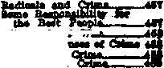
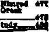
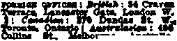

tl
A ;JOUR.N AL- OF - FACT H O P E - A N D - CO N VI CT IO N •
May 11,1921, VoL n, No. 43
Pubtitked every otKar IKI week at 3S tfyrtle Avenu\ VF Brooklyn, If. Y, V. 8. X fa Cekta a'Copy—S2.00 a Yeai tpd Tortfca Cooatii*^ *XM
Town ■ WEIXMDAE, MAX U. MM X«MB
CUNTKNTS of the GOLDEN AGE
SOCIAL AND EDUCATIONAL CMma's Rtetac XMa
Cbuzebee and CHm. *4.
The Wealthy aad *5T
Woman and Crtma ezit - Environment aad Crime IM
TJaMtnal Criminate , SU
“Good" Criminate aad Bad *M
Um Criminal Uberty and Otma.
Waa
and CrtmM aja Wealth and id Bevnrty and
POLITICAL—DOMBSTIC AND FOREIGN
Md
HOUSHWIFHBY AND HYGIENE
TRAVEL AND MISCELLANY Water Improvement ~ ,
AGRICULTURE AND HUSBANDRY A Raat Baperiment————————— RELIGION AND PHILOSOPHY
and the Bible, Scripture! Recognition of Heathen vodi.,..^ ,,.470 ■he Two Babylone______4T0
Nimrod the Mighty Hunter
Mlauod'a
.1
aad hie Influence -Enue end Semimml a “Myatmtm” at Haataen BalUiona Iterator aad •on*'
.471 .472
ATS
p —————ATS ttlan God delrla mnd , । , *‘T*
he Patriarch Shesa, and Mie Godly Influence in tne World —,————are
Woman" । • _ , । 4*f
The ‘Tmace ** Jealeaw" «•
God Baochue M
JUT«1U Bible I
.2!
Pubflthad otiMr W«da««day kt S Myrtle Aveaoe, (Boro of Brooklyn) b«w York. N. Y-by WOODWORTH. XVDGXNG8 «ai MASTIN
Jssrtutf ^iS M>rt
Ten Cbnta a Copt — 42.00 a Yeas
ante, AuetraB^ '.•
Make remit rances to The Golden 40* tiftKka sot aeeepWL
BrooHyn, N. T-, W»dne«day, May U, IMt
Crime’s Rising Tide (ft** Two)
THE real education of the young is not in the schools but in the more interesting environment outside the school; for the secret of education is interest, and a half hour of interesting intercourse playing craps will outbalance a day in school. The greed and avarice of adults far outweighs the lofty principles of dull and inefficient Sunday School teachers. The street at night is a powerful educator because "it is fun". Disobedience to parents at home inculcates contempt for law away from home. Lack of interest and love by parents for. their offspring ■ engenders lack of respect and reverence for the at^te and for moral responsibility. .
THE pay of the police is admittedly too low, and this has worked against the obtaining of the better class of men always attracted by higher salaries. Much of whatever inefficiency may appear to a person accustomed to strict British enforcement of law, is due to the desire not to have their system of graft interfered with on the part of politicians in control, with consequent lax enforcement of law. Whenever the “higher-ups” call for observance of the law, the police force is prompt to bring to an end the petty crime and vice which is made so profitable for those that toil not, neither do they spin.
Ineffectiveness in keeping crime at a minimum is not'usually the fault of the police. That not over one percent of the losses through petty stealing is recovered by the police may be attributable to the fact that the offenders have as expeditions and effective methods for the disposal of stolen articles as they have for getting ball, and that some of the agents through whom they work enjoy protection from big business and big politicians in return for a ■hare in the booty, a condition which has repeatedly been shown to exist, though uncovered with difficulty. Criminals at work safeguard themselves with look-outs and guards of their own, and do their work behind an effectual concealing screen of some kind. Reasonably strict discipline is the rule on police forces, with lapses varying with the efficiency of the bosses behind the scenes. In view of the enhanced difficulties coming through world changes, these are- considered critical times • generally for the forces set to contend with criminality. Considering war influences the police have not been properly increased in number, or they feel discouraged over their salaries or over conditions far above them making for favoritism or for a general laxity in law-enforcement. ‘
-3
AY. M. C. A. youth robs a train, takes $105,000, kills a policeman, defies fifty detectives, and dies with a bullet through his heart He had been a mail clerk with a good "character”. Nearly every person in prison is a church member. America, a country the best policed by church agencies, has ten times the murders that China is reputed to have with four times ' the population—or forty times as much on an equal population basis. What a wild_ riot of anarchy there would be in China if there were proportionally as many churches as in "Christian” America! For obviously the churches do not prevent crime. On the contrary the actual example of a church insidiously leads toward criminality; for what church is there that will discipline its wealthy or otherwise influential • offenders, rather than hush matters up and keep the ulcers unhealed! Churches run fairs with gambling games that teach boys to get something for nothing. Where is the church moneymaking affair without its fortune-telling booth
•i
taanhing familiarity with spiritism and demonism, which in later life bears fruitage in gross superstition and credulity toward mediums, astrology and other forms of occultism! Millionairesses vie with sports and toughs in organising boxing bouts, and afterward wonder at the decline of the spiritual influence of the church, ahd at the disregard of the high things for which the church of God should stand. And what may be expected of the well-trained members of a church — Roman Catholic — whose theologians such as Liguori specifically advise, “A servant has the right to rob his master, a child his father, and a poor man the rich”; and “When a crime has been well concealed, the witness and even the criminal may and even must, swear that the crime has never been committed; the accused may deny his crime under oath, understanding that he has not committed this crime in such a manner as to be obliged to confess it"!
O JUDGE by prison records, there is one class practically free from crime. Seldom do the wealthy get to prison. A wise man says that law and procedure are a net to catch little fish and let big fish through. When wealthy interests pick nominees for office, sometimes up to the presidency of the United States, and including the worth-while lower offices, legislative, executive and judicial. federal, state, municipal and town, and when these appointees are elected by the artless voter, there is little wonder that laws and their execution and interpretation are made in the interests of the class that so seldom enter prison doors. Any politician harming a man of great wealth is bound to encounter swift and severe handling at the hand of well-to-do anarchists and their agents and appointees.
Much of the criminality of the rich is done under cover and protection of laws put through-for thdt specific purpose: and the plunder that continually goes on. and the injury done, are so vast as to dwarf to insignificance all the stealings of ordinary criminals. Occasionally the opportunity eonies to steal on the hugest possible scale \Vithont let or hindrance, and then the linns of Wall Street emerge into the open. Sir.-h a chance appeared in the World War.whieh was characterized by a world-wide orgy of robbery, corruption and crime unprecedented in the
history of the human race. Immense fortunes ' • were heaped up by the profiteers and by a f horde of self-styled and press-lauded "patriots* who utilized the sacred mantle of love of conn-try to cover unparalleled iniquities. Many ; -
governments had “investigations", alias “white- 1 washes," in which the paid political agents of
the wealthy painted white the black crimes of
In the United States there was at least one. ' honest investigation — that of the. Shipping £ Board—in which dark depths were shown up to ; public view by fearless and incorruptible mdn, i such as Congressman Joseph Walsh of Massa- ' chusetts, chairman of the House investigating committee, and A. M. Fisher, in charge of the " J actual work. In the riot of corporation deprav- -ity, exposed by the committee, practically every crime in the code was practiced in an insane lust for money. To obtain excess profits, in the language of the committee report:
“It is necessary to corrupt timekeepers and checkers
in order that the work done by inferior labor but charged
for on the basis of skilled labor, may pass inspection,
and that loafing men or padding of pay rolls may go unchallenged. This again results in good men being heckled, insulted, or even frightened off the work, where . they will not prove susceptible to corruption. It is comparatively an easy matter to drop ‘accidentally’ a ' bar. or a wrench into the hold when a ‘straight* timekeeper or inspector is standing under, and thus it is not long before honest men are disgusted and discour- .
aged and others are corrupted. . . .Prevalence of thefts is so great as to demand immediate attention. Accord- . ing to the testimony of masters, mates, stewards, supercargoes, even seamen, the lack of proper checking, inspection and inventory has made the ease of theft of sunpiicj from United States Shipping Board boats the talk of the worljj’ in sea circles.”
In the higher circles of big business the crooked work to be done in profiteering at the expense of the various governments involved in the war was planned before relations with • the governments were entered into. That the । actors in this drama of iniquity knew better may he conjectured from the fact that many of . them were hankers and financiers—university graduates who had studied social ethics, personal ethics, business ethics, philosophy, Biblical literature, etc., and been under influences purporting to prepare them to become “moral leaders" of admiring communities—not the immoral ■ leaders and inspirers of crime that they have ! been. What was done by the well-to-do in con-
5-
nection with army and navy work throughout the world dwarfs into insignificance the two billion dollars alleged to have been squandered, or wasted, or stolen in the American ship work. The tidal wave of crime among the rich, which began during the war and still continues, is the real "crime wave", concerning which an obedient press has been discreetly silent
The ethical standards of big business may be guaged from the advice given by a prominent American financier in an address on "Success” before fellow-bankers. The aspirant for success ipust make Success his guiding Star, and ever keep his eye on the Stai?. Anything that comes between him and Success must be overcome or removed, or he must give up Success. If some individual steps between him and the Star, that person must be removed, the plain intimation being that a financier must not stop even at murder. The record of the unscrupulous rich abundantly bears out this Philosophy of Success.
It is a steep descent to consider matters relating to petty crime; but who can blame too severely the female members of rich families when well-brought-up, well-bred, well-dressed women occasionally have to stand up and plead guilty of stealing a pair of gloves, a Georgette waist, or some silk stockings! Such women steal because, like their brothers and husbands, they want something and employ "direct action” in going after it, and often, following the masculine example, show not the least penitence or regret. Of course the insanity dodge is worked by the lawyer and the stealing is "kleptomania”; and the husband who steals in business is duly horrified and confused at the misconduct of a wife for whom he has always provided a good home, automobiles and plenty of money or credit.
■pERHAPS the rise of woman to the suffrage A and equal rights with men, necessarily implies equality also in the underworld; but a bye. She feigns to be a street walker to Iura men to a waiting automobile full of bandits* or to her mon friends in a vacant flat In Chicago she is a nineteen-year-old Madonna-faced girl, who obtains employment in wealthy homes, chloroforms "the missus”, and disappears the night of the thefts, or is "badly frightened" by the burglars and discreetly resigns and goes "home”. She organises the theft of $50,000 worth of sugar from a government warehouse.
characteristic of the world-wave of crime is the emergence in many countries of the woman • criminal. She ranges from the rich shop-lifter-ess, bridge-whist shark and automobile and stock swindler, down. She lives with the gunman and is caught with him in the, blood-streaked taxi. She courteously inquires for valuables at the point of an automatic. She helps truss up the victims and kisses the young men good-
In Paris pretty Henriette Miffonne, alias Yevette, is head of a band of apaches. Wall educated, slender and attractively feminine, sho directs scores of robberies, watches near by against interference, and meets her Waterloo attacking a gendarme with pistol butt and bullet In London the Daily Herald says that "expert women crooks, specializing in housebreaking, safe-cracking, jewel-snatching, and cloakroom thieving have made a busy season for Scotland Yard. Posing as 'ladies of society' and frequenting the best hotels and most ex-' elusive drawing rooms, they are daring to a degree. Scotland Yard detectives believe that . the disappearance of the famous $200,000 Mango pearl necklace from the Savoy Hotel is traceable to one of the woman crooks that attended the ball there that night” That an increase of desperate crimes by women may be expected in America is intimated by the architect's plans for a goodly number of rooms for women in the new death house in Sing Sing prison.
THE old battle of heredity and environment rages on the crime question; but professional men, especially physicians, attribute little crime to heredity and much to environment. Certain it is that the two microcosms that unite to become a human being know nothing about crime, in comparison to the impressions favorable to disregard of the law and of right that encircle the person that grows up in criminal surroundings.
To boys that grow up, for example, in that part of Brooklyn adjoining the waterfront north of the famous Brooklyn Bridge, and in like localities in all other cities, to witness crime is a daily incident. From childhood up they are encouraged by parents born under the demoralizing influences of Boman Catholi" Europe to bring home articles picked up in th ittle stores or off the peddlers’carts, and no questions asked.
" \kS|'
■ ■
k-’
Hundreds of these boys never do a stroke of work after leaving school, and live on the fat of the land. Gang life on the streets of the cities is full of attractive adventure, often under the leadership of spirits that become adepts in eri me. What would be more unnatural than that the gang members should not follow their admired leaders! Kindred spirits herd together and, with no formal Fagin schools of crime, are moulded by an environment they cannot resist Under the present civilization it is impossible for the reform agencies to keep up with the power of environment
The “trusted employe” has been figuring prominently in spectacular crime. He is a $90-a-month bank clerk handling fortunes daily; and Justice Landis paroles him, with blame laid on impecunious bankers who cannot afford to pay their help more and who thus place undue temptation in the way of the poor men, for be it not forgotten that $90 now is the equivalent of $50 before the war. He embezzles for a good time, a good living or speculation, and “organizes” a hold-up of liimself to cover up the theft. As chief messenger for brokers he lays the plans for confederates to rob him and give him a harmless wound or two. Many crimes “happen” in which the offenders are more than accidentally acquainted with the business habits of the concerns robbed.
Habitual Criminals
TN ORDINARY times the habitual criminal A figures largely, but in the recent roundups only about a quarter have had criminal records. So many offenders are new at the business of crime as to suggest entirely new causes at work for the world-wave of crime. A typical old-timer was recently taken in Leeds, England; his record for twelve months was: Stole a portmanteau and contents at Baslow; a dressing case at Grimsby; left Grimsby in a stolen motor car, went to Scotland and then to Ireland; came back to England and bought a £400 motor car witlT* worthless check; tried to get another car at Shrewsbury; and another at Tunbridge Wells by paying part of the purchase price; at Windsor used worthless checks to obtain £25 worth of clothing,}a car and some jewelry; at Woodhall Spa a' £300 car with another worthless check; at Cambridge £9 worth of cloth; at Dux-ford a fountain pen; and worthless checks for a car at Southend and London, and £150 in
money from a lady; the total property vahx was £3,273 (nearly $13,000), for which five j years were given, after many previous yeara in j
prison. '
Habitual criminals have to be at it all the time and in different localities—there is no neo- . i ful occupation in which they can be employed^ _. This differs from Japan, where the law is that a 1 penalty suffered pays the man’s debt to society, and that it is a criminal offence to discriminate ' against an ex-convict because of his prison . record. Of course no one expects heathen Japan to be so advanced as Christian (!) America or ' England! That she is far in advance in this par- ■ i
ticular is greatly to the credit of the Japanese.
THE ways of the criminal are legion. Four-teen-year-old Eliot Michener smoked expensive cigarettes, and spent money for travel, moving pictures, a pistol, and two boxes of candy, all bought in the most expensive stores. Peter Colaginio kills a neighbor in a quarrel over chickens. A sixty-year-old terror from Texas gambled forty years in California, Oklahoma, Nevada and New Mexico, and never worked a day in twenty-five years, except four .days when “I just got mad at myself, and I waa the . workin’est man in the bunch”.
New York pool rooms are full of youths who never work, but who always have plenty of money, and some of the police are afraid of them. A bandit growls to his pal: “Don’t take that ring! A wedding ring is sacred with a woman; I’m a married man and I know how they feel. But she'll have to hand over her money!” “Outside of the fact that they were robbers,” said Mrs. French of some bandits, -“they look to be most respectable in their dress and manner.” “That old rabbit’s foot is no good,” exclaimed burglar-and-eoiivict Leroy Green as he threw the talisman aside. Rev. Henry G. Miley honestly carrying the communion cups to church is knocked down and kicked ’ for a thief by an undiscriminating crowd. A Hull, England, undertaker is arrested for stealing a two-shilling shroud off a corpse. The poorbox contents and the jewel? from the pyx box go their way to the “fence” of some thief who had no scruples against church property. “Diamond” Mike backs out of mass at Catholic churches, picking the pockets as he crabs his
way out. A Canadian burglarizes the home of Cardinal Gibbons. The meanest thief strips AH Saints* Christmas tree of the gifts for the "kiddies", but a burglar with a heart heeds the piteous appeals of little Buth Malley not to •take her Christmas presents. A highwayman robs Mrs. Mertz of $80, but courteously hands back $2 with, "You might need it for gasoline".
When "Nick" Cohn gave himself up in the ' taterests of Arn stein because "he was willing to take the stand in defense of Amstein", it was an exemplification of that real honor that exists among thieves. It is nothing unusual in penitentiaries to find men suffering terms for offences they say they did not commit, rather than gain freedom by betraying some pal whose liberty would be compromised by the telling of the truth. Much of the crime of violence and robbery today is committed by boys of twenty and twenty-one, devoid of that sense of social responsibility which it is the duty and privilege of home life to inspire.
Popular imagination paints the criminal as unshaven, with a mask, a low forehead, and Undershot jaw, slinking around in the shadows. l*his was the old-fashioned "criminal type” of the criminologists, but now there seems to be no type. Criminals look like other people, and are like other folk who have adopted a new line of work, wherein they have adopted the motto of big business, "You can put over anything, if you’ve just got nerve enough to do it right".
Insanity and Crime
IT IS difficult to ascertain to what extent mental unbalance causes crime. Everyone is more or less out of balance, and more so at some times than at others, according to the acuteness of mental stress or to impairment of powers of resistance. Those that have good clothing little imagine the stress at times upon the minds of women and girls that love pretty things hut
cannot afford them. Many highly educated . world; for a heavy proportion of criminals are
grown-up^women plead insanity—kleptomania —as an excuse for their shoplifting escapades. Bobberies and pocket-picking are at an annual peak just before the holidays, when "the boys’* .go out to get the wherewithal for Christmas presents thdy cinnot otherwise pay for. If a audden brain-storm overcame Harry Thaw as he slew White, how often must reason and i'udgmenl be swept away in the crimes that •lock court calendars!
. There may be more truth than superstition in the ancient idea that crime, like witchcraft and insanity, was deemed a visitation from the devil. If the Bible is to be believed at all, human beings are sometimes possessed o f devils, under whose influence tney do irrational and violent things. By those that have made a study of the subject it is stated that half the inmates of insane asylums are victims of just such demoapossession as we must believe existed when devils also came out of many crying out and saying, "Thou art Christ the Son of Goa”; and He, rebuking the devils, suffered them not to speak; for they knew that He was Christ (Luke 4:41) It occasionally occurs that persons under demon-possession say that they are incited to crime by their unwelcome guests, and in not a few instances criminals state that they were irresistibly prompted to execute their crimes. The arch-criminal of the age, Kaiser Wilhelm H, said for years before the World War that he was continually hearing a voice’ that urged him os to his great offence.
Drugs and Crime .
A FEW years ago most of the crimes of certain classes would have been charged to liquor; but now, owing to the beneficent federal prohibition law, the evil influence of drink Is gone in ninety percent of the United States and, in a few years of rigid enforcement of the law, will be entirely gone. Alcohol as a narcotic drug has at last been placed in the class where it belongs, among the other habit-forming drugs. Except in the larger cities which have been flooded with liquor illegally obtained from bonded warehouses, and with dangerous homebrews, one of the great crime-causing agendas is practically gone. With the British Empire pouring opium and other drugs into the United States it is little wonder that a vast amount of prohibited drugs is consumed by the underdope-users. This enhances the difficulty of satisfactorily helping the professional criminal,, who under the degrading influence of the hypo- ' dermic needle often sinks lower and lower.
Speaking of this class, Chief Magistrate William McAdoo, of New York, says: "They -are all degenerates, and ought to be on a big custodial farm working at manual labor; they are more dangerous now than the red Indians were to the early settlers”.
2 Movies and Crime
THE political clergyman finds it convenient to point away from causes nearer home and |■ - to lay the blame for much of the juvenile orime ;,■ ■ » at the door of the movies. But we have had the
movies for nearly twenty-five years, and in their early days they were far worse than now, - : . for it must not be forgotten that never has the
product of the motion-picture industry been ? : cleaner and more wholesome. The same blood-
drenched clergy who only four years ago every-w where preached the world into the ghastly
butchery eventuating in the dark chaos now ‘ engulfing a civilization, would perpetuate their
. evil influence in a reign of intolerance liable to
* rival that of the dark ages. They seek to fool
1 the people and cajole or threaten lawmakers
into putting the control of the people’s movies j and other amusements into their blood-stained
| hands. As a cause of orime the movies are
slightly oontributary, but nothing in compari-1 son with other great causes which the clergy
have not dared to oppose or expose. It was the * political clergymen to whom Christ said: "Ye
are like unto whited sepulchres, which indeed apI pear beautiful outward, but are within full of
4 dead men’s bones, and of all uncleanness; even
■ so ye also outwardly appear righteous unto
jf men, but within ye are full of hypocrisy and
4 iniquity”.—Matthew 23: 27, 28.
The Criminal Press
! TT IS the proper business of newspapers to
< J. report the news, and in this connection to
report crime. But orime is an exceedingly incidental part of the life and doings of a great 4 people, and ought to be given only its propor
tional place in the day’s news. On account of , the powerful feelings of fear and animality
excited, crime stories are published in harrow* ing and disgusting detail; for the attention
value of something appealing to base motives is also “news value”. A brutal orime obtains . rnosp publicity a hundred times over than a
, beneficent' act of the highest possible worth.
The fame-seeking mind of the criminal sees in crime both a livelihood and a blaze of glory . after detection. The popular mind responds
‘ almosfi entirely to impressions and suggestions from without, and the incessant prominence of " suggestions of crime makes the daily press the
most powerful and dangerous permanent cause ■ of crime. The newspapers of a given oity by
exploiting local crime advertise to criminals the ~ 9 country over that that city is a good safe plane | to practise crime, and "the profession" dock | thither from all over. . . I
The press both eulogize crime and belittle N crime-combating agencies, about which perver- ■ - >> sity of the criminal press Commissioner Bn- -*•* right of New York says:
'"Throughout this critical period, fraught with evil '■I'’ potentialities, the support of the press and any of the . It other pseudo agencies of good, government were oon- ' s apicuous by their absence. These very agencies, oon- . ,
trary to all other generally understood principles, when -■; many other cities throughout the country were seething with unrest, riots and lawlessness, lost no opportunity ' ' to malign, - belittle and decry the Police Department t
of New York City, although the tranquility of the city
prevailed in the piping days of peace of 1916 and 1917."
“I wonder,” inquires a writer in the New York Globo,
speaking of the criminal inactivity of the press attitude J toward crime, "If- it has ever occurred to any of the 1 newspapers to take some constructive . steps toward *’ | reducing the wave of crime which seems to be flourishing in the greater city.” ba
The newspapers are owned or controlled by p
big business, and work for the politicians. The j
politicians wish to oust a police commissioner; p the papers terrorize the people into believing P that a fractional increase in certain classes of ; crimes constitutes a tidal wave of crime. It is 1 very simple. But it demonstrates the necessity : for a complete change in the management and ' operation of the newspapers. ’ p
■ ■ ■■ ;
Liberty and Crime . j
IN OTHER countries that used to bo free from ■ , any great amount of crime, the citizen and I especially the foreigner were card-indexed, and \ permitted only a slight amount of movement rL without permit from authorities. In almost any t great foreign oity the traveler is more or less | under surveillance all the time, must register, ’. and tell where from, where to and why he ia I-
there. American traditions and regard for oon- 1,-
atitutional rights would raise a mighty protest . against any such infringement upon personal liberty; but that liberty, as a much lesser evil, !’ contributes measurably to crime. The foreigner • in America, accustomed to restrictions, is temp- , ted to change liberty into license, as his mind turns toward crime as a livelihood; and the native-born is not behind his foreign brother. ja
; ■ * The foreign mining and industrial sections of
> cossack-ridden Pennsylvania had a chronic
k yrave of crime until the advent of the mounted
i’ ; constabulary or the coql and iron police, which
lawlessness was promptly suppressed, and is f. ' kept under by the efficient but lawless brutality !*< . «f these officials.
< . There is a sharp difference of opinion bet < tween Wall Street and the common people
< whether under the industrial oppression of
f ' certain localities it is a good bargain to barter Hberty for order, when order might be obtained t)y lifting the heavy industrial yoke somewhat ~ and giving the workers a chance to stand up
' straight. In all parts of the country there is a
' drift toward the giving up of liberty rather than the giving up of profiteering, in plain defiance of the principle that under just conditions liberty and order are twin sisters.
THE radicals have been indirectly responsible -for some crime. Not that they committed the crimes, but that the police were kept so busy hunting "reds” that the real criminals enjoyed * much needed rest from police aggression and had a chance to increase their regular activities.
' Recent sworn evidence in court is to the effect that most of the dynamiting, bomb crimes, . arson and other crimes charged by the press against the working people and the radicals, were committed by private or public detectives hired for the purpose by big business. Moreover, it is a matter of record that a federal -judge stated that the United States Department of Justice under the Wilson administration operated a considerable section of the communist movement of the country, when those people were made the object of public hatred and fear by the press. Without detectives or secret sery-ice men in disguise to corrupt the movements and incite the members to violence the workingclass jnovem' nt would have been comparatively free frbm violence.
In order to throw suspicion from off them-aelves the great profiteering, interests have caused one class after another to he unjustly - charged w^th whatever offenses might at the •’ moment be particularly odious. The public has * one-trackhnind and will hate but one class at a time—a b’+ of psychology behind which the hue and cry has been raised first here and then there, a plan to be carried on until the statutes of limitation should liquidate the blf offenses and free the big criminals from worry.
The latest persecution has been directed toward persons charged with being undesirable aliens, and the accusation is made that most of the crimes of violence are committed by this class. The charge would be true if made broadly against dwellers in the slums and other undesirable quarters, whither aliens naturally tun in quest of low rents and low living costs. If a great deal of crime is done by such people^ it is the fault of all the rest of the people is failing to realize that a poor alley or court ii a liability for the rich avenue a block or tw* away, both in disease and in crime. If the alien* could’ take well-paying positions at once, they would be a highly law-abiding class, and if the native Americans were forced to live in slum quarters, the crimes would be theirs; for not so much birth or parentage, but environment produces criminality, or the reverse. It 1* society's business to make the alien feel at home, and enable him to earn a good living, and thus make a law-abiding American of him —not neglecting first to have done likewise for the sons of the soil.
SAMPLE excels precept; and when the grown-ups indulge in an orgy of crime it is little wonder that the weaker-charactered people—the young, the defectives, the undereducated and the undernourished—follow the example.
Ex-President Taft says, “We have prided ourselves on being a law-abiding people”. I The italics are ours] But that passed away a few years ago when the self-styled law-abiders— of Wall Street, politics and the pulpit—threw down the big-business jimmy, the legislative black-jack and 'the ecclesiastical club, took up in one hand the cross and the star of liberty, and in the other a fist-full of persuasives — cannon, trench mortars, tanks, T-N-T, machine guns, hand bombs, and poison gas—and on all sides of the Atlantic and Pacific started out for Christian blood in an orgy of devilislmess abroad and a reign of terror at home—Teutons and the Allies alike. The so-called “best” people turned loose to maim and to kill, and to hate, hate, HATE! They placed murderous weapons in the hands of millions of young men, taught them hate, and urged, instructed and preached
9
I
1
3
F i
1
1
1
i
3
them to commit crimes upon the bodies of other young men, cruelly and ferociously to a degree. Youths became accustomed to seeing piteously wounded friends and enemies piled in heaps, to hear their wails of agony as they rotted to death in sight but out of reach. Teachers and preachers of the gentle Christ enjoined devilishness as a Christian duty, and had imprisoned, tortured, or shot any of the heroic twentiethcentury martyrs who persisted that Christ taught love, not hate, and the doing of good, not of murder.
Today the same preachers enjoin the loving kindness they rejected yesterday, and bewail the wicked criminality of the young men that with the same weapons enforce immediate compliance to crimincommands. The ones commanded are not the hated enemy, but the stayat-homes that profited from the ruin of war. The curse of the world today is that men just graduated from the gigantic school of crime run by big business, the politicians and the clergy, refuse to discontinue instanter the practices they were too well instructed in. Nearly all. the recent crimes of violence are by men of twenty to twenty-five. Men instinctively recoil from the thought of taking human life; but, as comments the Baltimore Sim-.
“When men unfamiliar with strife are taken from their peaceful vocations, trained as killers and led into battle, where they may win praise and promotion by displaying unusual efficiency in the art of slaughter, they cannot return to the ways of peace with their former dread of homicide. Those with well-developed minds and strong moral characters may within a short time force the nightmare of war from their minds and become as they once were; but the weak character and the weak mind will never rebuild the structure torn down by war. Yesterday he killed a fellow-mortal and rifled his pockets in the cause of democracy; today he kills a fellow-mortal and rifles his pockets because he needs the money. The ‘glorious’ slaughter arranged by statesmen prepares the way for private jobs of killing.”
Th^war is responsible for the cruelty and violence of much of the crimes of the day. Responsibility for these crimes lies at the doors of those that promoted the war—the wealthy, the politicians and the clergy of all the countries involved.'Let'them either bring about changes in business, public administration or practical religion calculated to remedy evils of their own creation, or suffer whatever penalty a just God has ready for them.
IN EUROPE the dread aftermath of war is sketched by an expert criminologist at Budapest University:
"Crimea have inoreaaed in the countries to ten times their pre-war number. The criminal in his revolt against society is becoming more and more desperate. It is not simply that there are far more crimes, but what is worse, they show an appalling increase in inhumanity. The cold-hearted villains of today are far beyond anything formerly known. There is no question that the World War, with its untold suffering, tried the faith of millions. It seemed hard to believe that there was_ any God controlling human affairs. If there was the God of Love of whom the Christians spoke, how could He allow such unspeakable sorrows to come upon the world? Under the strain faith gave way. And nothing will bring the world back to quiet and steadfast ways again, but a return to its faith in God.”
And the world contemptuously challenges a clergy who forsook the ways of God to help bring on the war, to teach again the gentle Christ to people that have lost respect for them. No, the way out is not through a clergy who betrayed God, Christ and the people that had trusted them to teach God’s Word.
IT IS a steep descent from so gigantic a causa of crime down to mere economic causes, but from such causes springs even war itself. An insignificant cause of crime is gambling. Gambling, which is a manifestation of the love of adventure and a superstitious belief in the deity of. chance, is rather an accompaniment than a cause. Some crime flows from insurance; it was broadly hinted that companies insuring against burglary found it profitable to have a few more burglaries than usual—it brought on a scare and bettered the business.
Press reports continually convey the impression that labor troubles are great causes of crime. The facts are the reverse, except for the crimes committed or incited by private or public detectives working among strikers to get them into trouble.
WEALTH, however, does cause crime, directly and indirectly. There are no more dangerous criminals in the world than those whom Roosevelt called "malefactors of great wealth”. The business crimes are legioa
i which are cooked up in corporation offices and S - indorsed by the banks. There are plenty of ? good rich people, but these scoundrels not only commit innumerable crimes in the pursuit of < money and power, and for private grudges and * in wantonness, but they incite others to crime. F'~ Stealing by the rich furnishes the example for
i- stealing by the poor. To the young man there
is little difference between the wealthy holding-L' : up the public and the thief holding up the rich ; man. Many burglars would not have become burglars or gangsters if the idea had not come aown from above that it is good business to grab everything in sight and get away with it.
' War profiteering is an extreme instance of callousness in “higher” circles, which is certain to be followed by a wave of crime of which what baa yet been seen may be but the beginning. It would be well for these great thieves, before it is too late, to set a good example, and save themselves and the rest of the nation trouble, by making restitution of as much as possible of their stealings and other ill-gotten gains. This would immediately create an atmosphere • in which the better influences and agencies might have some chance of saving an almost hopeless situation.
Professional criminologists relate that in the dark ages the punishment for crime was made as severe as possible. Death became the regular sentence for dozens of minor offenses against property; and torture, quartering of the dead body, and exposure of decapitated heads upon city gates and along roadways were added. But crime was unaffected except that the worse the punishments, the more dangerous became the criminals. However, when times grew better, there was less crime; and when they became ' harder, crime increased. It finally dawned that . - crime varied with economic conditions, which is the true theory of variations of criininality.
t rpHIS principle never sleeps. If the World J- War had been followed by unprecedented prosperity everywhere there would have been comparatively little crime, in spite of the bad r influence war and its sponsors. Europe is seething with crime, because times are very bad; the crime varying according to the pros. perity of the locality. In Germany the prisons are crowded; and judges and juries are working overtime, from nine a. m. to eight p. m. Yet crime flourishes as never before, robbery lead
. ing the list. Not professional criminals, but employes of railroads, stores and like enter* prises, are stealing to eke out a miserable living for their families. To counteract the crime wave . will require, not more hand-bombs and rifles for the police, but less hard times. Vienna, which seven years ago so lightly started the great war, has added to its court cases children six years old and upward; these little ones are not criminals, but human beings destitute and desperate from hunger that knows no let-up. England is seeing a rapid rise in crime from the plight of its hundreds of thousands of workers.
When the Federal Reserve Banks in 1920 chopped off the customary credits from American industry and trade they opened the sluicegates of crime; for the unemployment of several million people is directly traceable to the banks. Police magistrates throughout the country assert that the chief cause of crime has been unemployment. During the war the working people were geared up to a higher plane of living than before—and none too high at that; and when the dump came, some of them began to steal in order to enjoy good things a while longer. In Seattle a census revealed that four-, teen hundred children were starving. The wonder is that more of the parents were not out stealing for their little ones. That they were not is a tribute to the sterling in their character. Not a few everywhere work by day and thieve by night, as is apparent from the low-pkid occupations of many that are arrested for robbery.
It is to be hoped that something will teach the bankers at the head of the fabric of civilization that they must be more considerate of the welfare of the millions actually, though not legally, under their charge. They are in duty bound to do everything in their power to retrieve their great mistakes before things go so far that the situation cannot be saved. The people are becoming aware that the banks are the responsible parties, and they are watching the acts of great bankers as never before, with a view to legislation and other governmental action that will take from private hands the unlimited power that now exists to do the world harm.
MUCH is said at times about the persecution of Christians by Pagan Rome, but the , principal cause of the persecutions lias been
oarefully hidden from view.
A variety of subsidiary causes have been ' written up, such as the unwillingness of early * Christian to worship idols, to worship the
Emperor of Rome or to take part in the bacchanalian orgies of pagan rituals, the intent » of the writers being to ascribe religious reasons
for those ancient persecutions.
There is a reason, however, why the main ■ cause has been hidden from view by the eccle
siastical writers. The cause of persecution was ! of such a nature that if the ecclesiastics of
today had been in places of influence seventeen * hundred years ago they would perforce have
.! been chief among the persecutors of the early
martyrs. For the victims of Rome’s ferocity t were condemned to torture and death for the
same reasons for which within three or four - years twentieth century Christians have been tortured and slain at the behest of clerical instigators of these crimes.
. In a book entitled "The Early Christian Attitude to War, A Contribution to the History f of Christian Ethics,” by C. John Cadoux, M.A.,
, D.D., published by Headley Brothers, 72 Oxford
Street, W. I. London, a searching investigation ; is made of the various Christian authorities and
■ writings of the period from A.D. 33 to A.D.
1 170, concerning this subject. Many interesting
1 and important findings are published in this scholarly study. Objections are carefully met, ’ and clerical forgeries exposed.
It would seem obvious that if the actual attitude of Christians in the period immediately t succeeding the twelve apostles can be ascer
tained, it must indicate a suitable attitude for all Christians to take toward combatant service. This .understanding is exceedingly important ’ to suclt' persons as desire to live real Christi
anity; and the findings of Dr. Cadoux should be of value as a guide to that body of Christians . that seek to pierce through the darkness of
' antiquity\and ascertain the truth, in order that they may^walk in the truth. The book corre-. apondingly condemns opposing views and holds out to mistaken Christians the invitation to reverse their steps and w'alk in the ways that
undoubtedly were taught by the apostles; for these truths were taught and held by their successors for a century and a half.
In brief, the early Christians were persecuted by pagan Rome because they were conscientious objectors to war, and only in a minor degree for religious reasons, the latter being usually mere excuses for attacks upon innocent and unoffending people guilty, in a military age, of adhering to the peaceful principles of the Founder of Christianity. ,
Apart from Cornelius and the one or two soldiers who may have been baptized with him by Peter at Ctesarea about A.D. 40, and the jailer baptized by Paul at Philippi about A.D. 40, there is no direct or reliable evidence for the existence of a single Christian soldier until after A.D. 170. In those days all persons wearing the uniform were engaged in combatant service, non-combatant work being done largely by servants, many of whom were Christians.
The early Christian - church-rules were as follows: In the Egyptian church order, Latin version, the rule was: ?
. "The soldier, who is under authority, thou mayst not allow him to kill men; if he is ordered to do so, thou mayest not allow him to thrust himself forward . . . if he is unwilling to comply, let him be rejected. If a catechumen or a believer wishes to become a soldier, let him be rejected, because he has despised God.”
In the Ethiopic version of these rules it says: “He who is a soldier among the believers, and among the instructed, or a star-gazer or magician and the like, and a magistrate with the sword, or chief with prefects, let him leave off or he rejected. . . . And a catechumen or believer, if he wishes to be a soldier, shall be rejected, because it is far from God.”
The Canons (or rules) of Hippolytos said:
"A man who has accepted the power of killing, or a soldier, may never be received at all. . . . Persons who possess authority to kill, or soldiers, should not kill at all, even when it is commanded them."
The rules known as “The Testament of Our Lord,” said:
“T.et a catechumen or a believer of the people, if ha desires to be soldier, either cease from his intention, or if not, let him be rejected. For he hath despised God by his thought, and leaving the things of the Spirit, he hath perfected himself in the flesh, and hath treated the faith with contempt. ... If anyone be a soldier, or in authority, let him be taught not to oppress or to . kill or to rob, or to be angry, or to rage and afflict
J
- ',lw ■
■: anyone. . . .But if he wishes to be baptized in the
r Lord, let him cease from military service or from the
1 ' post of authority, and if not, let him be rejected.’’ t ■ The summing-up by Dr. Cadoux of these ancient rules is:
“The substance of that original regulation must have been that a soldier or a magistrate who wielded j’ the power of the sword could not be admitted by bap-f tian to membership in the Christian church, unless he had first resigned his military or quasi-military calling; that if a catechumen or a baptized Christian - became a soldier, he must give.it up, or else suffer exclusion from the church; and that similarly a mere J desire on his part to become a soldier, showing, as it was thought, contempt for God, must be relinquished, on pain of rejection or excommunication.”
One of the famous martyrs of ancient Christian times was Maximilianos, in 295 A. D. He was a young Numidian Christian, just over twenty-one, and was brought before Dion, the proconsul of Africa, as fit for military service, He refused to serve or to accept the soldier’s badge, saying repeatedly that he could not do so, because he was a Christian and served Christ. Dion tried again and agajn to overcome his objections, but without success. It is fairly elear from the martyr’s own words that the objection was largely, if not solely, to the business of fighting, the question of sacrificing to idols or to the Emperor not being mentioned by either party.
“I cannot serve as a soldier,” said Maximili-anus; “I cannot do evil; I am a Christian”. Dion told him, “In the sacred retinue* of our Lords Diocletianus and Maximianus, Constantius and Maximus, there are Christian soldiers, and they serve”—this being after the period of universal conscientious objection to war by professing Christians, and at a time when “Chris-tian’ministers served also as priests in heathen temples, showing that they were not Christians at all.
Maximilianus replied: “They know what is fitting for them; but I am a Christian, and I cannot’do evil.” “IVhat evil do they do who serve?” asked the. proconsul. “Thou knowest what they do,” was the answer. Xothing more could be done, and Maximilianus was sentenced to and suffered the death penalty. His body was taken'to Carthage and his father returned home, thanking God that he had sent forward such a gif’ to the Lord. Maximilianos was ultimately canonized as one of the saints of the Roman Catholic Church, being an awkward
saint for a church which so vehemently advocates killing, bloodshed and war “for a good ' cause”. ■ t
Another famous martyr, Marcellus the cen- > turion, A. D. 298, insisted on resigning hil office, cast off his military belt before the standards, and called out, “I serve [milito] Jesua Christ, the eternal King”. Then he threw down his vinestaff and arms, and added; “I cease from this military service of your Emperors. . . . I renounce the standards and I refuse to serve as a soldier.” His last words to the judge were, “I threw down my arms, for it was not seemly that a Christian man, who renders military service to tlw* Lord Christ, should render it also by inflicting earthly injuries”. When he was sentenced to death, Cassianus, the clerk of the court, loudly protested and flung his writing „ i materials on the ground, declaring that the ।
sentence was unjust. He suffered death a few I i
days after Marcellus.
Lactantius, an early Christian writer, ruled" । out military service on the ground that it in- i volved homicide. “If God alone,” said he, “were worshiped, there would not be dissensions and । wars; for men would know that they are sone of the one God, and so joined together by the sacred and inviolable bond of divine kinship.” He adds that the gentiles had banished justice from their midst by persecuting the good.
In the Christian’s attitude toward war at that time the pagan authorities found ample excuse for persecuting and killing Christians. To induce Christians to take up man-killing they ad- .
vanced every argument that was brought to bear : ’ upon twentieth-century Christians in the armies of so-called Christendom. Latter-day militarism has brought nothing new to persuade conscientious objectors to take up combatant service.
In view of the foregoing, which is only a 1 fragment of the testimony of antiquity in favor of the Christian conscientious objector to com- i batant service, the letter on the next page from 1
a young conscientious objector in the British armies makes interesting reading when his experiences are contrasted with the relatively humane methods of pagan Rome before it came under the influence of organized religious hypocrisy.
Rome executed her martyrs with a speedy efficiency. A hint of what modern count' ic ■ have done, at the instigation of “Christian” clergymen, follows this article.
WHEN the World War broke out I was sixteen years of age. My four brothers were promptly inducted into military service; and in due time, as soon as I reached military ago, I was also instructed to report at camp. Having conscientious objections against the taking of human life, I made application for work as a stretcher-bearer, and finally obtained it after sixteen months of experiences in England and in France, which are briefly summarized for the readers of The Golden Age.
My first application for stretcher-bearer service having been refused, I purposely overstayed a leave of absence just long enough to miss the embarkation of my company for France, was oourtmartialed and sentenced to Wandsworth Prison, London. After ten days my sentence of one year was cancelled, and I was ordered to rejoin my company and drill with bayonets. This I refused to do, and was again imprisoned. Shortly afterward the major of my regiment told me I could be transferred to the medical service after crossing to France, so I rejoined my regiment and went to the front.
Arriving'at the front I made three written appeals for stretcher-bearer service, all of which were ignored. When ordered to fall in, with a rifle, to join the men in the trenches, I purposely absented myself until the company had left and then surrendered to the military police. Was given another chance to rejoin the ranks, which I refused, even when threatened with immediate execution. v
For three months, while awaiting court-martial, I was very busy carrying food into the line, repairing trenches, and doing whatever I could for the comfort of the soldiers, but refused to carry munitions or barbed wire, because of their relations to the cause of human suffering. On one occasion a bursting shell buried me with my loa<l, and I was the only one of our little party of food carriers to survive. Shortly afterward the coiirtmartial convened and sentenced me to three years imprisonment at Abancourt, France, military prison.
On arrival afithe prison I still refused to perform military duties and was taken before the governor who, after talking harshly to me, sentenced me to what was known as Number One Punishment diet. This consisted of ten
By F. Q. Plait (London) '
days solitary confinement in my cell with ft period of three days bread and water alternately udth three days full prison diet, which in itself was not a substantial meat Thia made six days bread and water out of the ten. On each of these days I was allowed six ounces of dry bread and one pint of water at eight o’clock in the morning, and nothing more until eight o’clock in the evening, when I received the same.
At the end of the first two days bread and water, one began to feel famished; but on completion of the.third day the pangs of hunger seemed to die, and nature seemed to take the new diet more easily. But on completing the three days full diet which followed and on commencing again on the further three days bread ’ and water, hunger was renewed. Thus every three days full diet served as an aggravating process. _ ,
During my confinement I was not allowed to receive or write letters, and nothing was allowed to be taken into my cell, even the Bible being forbidden. The cell was empty, having not even a stool. It was small and gloomy, having just sufficient room to enable one to lie down at night on the stone floor. The walls were of iron. There was a small ventilation opening near the ceiling, through which the rays of the sun occasionally entered and the stars peeped at night.
After completing the ten days I again refused to comply with orders, and was again t^ken before the governor. With a look of surprise he sentenced me to a further two weeks of the same punishment, after which I began to feel physical weakness, owing to insufficient nourishment. I was over eighteen years of age at this time, but was still growing and, of course, had a growing boy’s appetite.
On completing that sentence I was again before him for the same offense, when he sentenced me to a further month of solitary confinement. During this month I was given three days bread and water alternately with three days full diet for two weeks. During the second two weeks I was placed in handcuffs. These were better known as “figure of eights”, -owing to their shape. They were so made as to grip the wrists securely behind the back, bringing the forepart of the arms up, one over the other, in a painful maimer.
f
* ■>
. These were applied all day, from eight in the
r morning until eight at night, with one hour's
• break at twelve o’clock noon. It was then in the
S zcold month of February; and being unable to
। rub my hands, I had swollen and frost-bitten
p . fingers. The medical officer visited the cells every morning; and on my asking for treatment for my eut fingers he exclaimed, “That’s 1 nothing!” and slammed the cell door in my face. 1 Sty arms, being tightly secured behind the
back, ached terribly, especially after the first five hours. Owing to the intense cold I was ‘ compelled to walk quickly up and down continually, so as to keep warm. Sometimes I was . forced to keep this up practically all day: but having been under bread and water punishment for some considerable time, there were periods when I was unable to continue my walk and was compelled to sit on the frosty stone floor.
I was unable to sleep during the day, owing to the cold, and slept very little at any time, owing to the pangs of hunger. Very rarely I slept any before midnight, and often I heard the prison bell strike two o’clock in the morning before sleep came. We had to be up at six-thirty. . ■- Having, by the Lord's grace, completed this sentence, I again refused orders, whereupon the governor seemed tried beyond patience, and sentenced me to another six weeks solitary confinement to my cell, the last four weeks of which were on severe punishment diet. These last four weeks were a period of gradual starvation, • during which time I felt myself becoming-weaker, and as a result experiencing greater difficulty to keep myself warm.
Coupled with the last two weeks of this punishment, I was taken outside in the open and tied to a post by the shoulders, hands and feet, twice every day for a period of two hours each time. This was done before the other prisoners, probably as a warning to them. Finding that this would not move me, the governor became furious and sentenced me to continual confinement to my cell until I should be forced to give way. With this I was given twyo weeks of what was known as "shot drill”.
A cement block weighing thirty-five pounds was placefl in my hands and this the sergeant ordered me to hold out straight in front of me. He then instructed me that on every blow of the whistle I was to place this weight on the ground, and lift it up again quickly, walking three paces in between the movements. This was a slow pro-
■! ' ■' ' ...... '
cess of fatigue until one’s back felt ready to ’ break. There was an allowance of two minutes i rest at the half hour. ]
Having been on bread and water punishment j for nearly three months, with very little nourish- 3 ment in between, I soon found my strength . J failing me. After I had been undergoing thia 5
fatigue for about fifteen minutes the governor ]
came and watched me and remarked mockingly^ “How do you like it!” Soon after he had gone j I became faint with exhaustion; and dropping the weight, I refused to continue. The sergeant then warned me that he would hang the weight .< around my neck i f I did not carry on; but finding ;
I could not continue he took me before the .
governor, who sentenced me to a further eight- . een days of the same punishment, threatening that if I refused again he would have the weight -hung around my neck and have me dragged with it around the open square.
The next morning I reported myself to the medical officer, as prison rules allowed a prisoner to see the doctor if he could not undergo hia punishment as a result of ill health; but before I had stated my case I noticed the governor standing behind the medical officer who, upon my entering the room, said to the doctor, "Ohl this man is a cons-ientious objector”. Im- _ mediately the doctor's mind was poisoned against me; and refusing to examine me, he marked me fit. It was evident that the governor had planned to be there; for had the doctor found me unfit, the governor would have had to withdraw his sentence.
That same morning, while I was in my cell, I heard the governor instruct the sergeant with respect to me. saying, “If that man refuses to take the weight this morning hang it around his neck”. Presently I was pulled out of my cell, and pushed along the corridor, when again the stone weight was handed to me, whereupon I refused to take it, knowing that my strength was unequal to the task. The sergeant then struck me on the face and offered it again to me. ,
Upon my refusal, he struck me a second time.. Again I refused; and he struck me a third time and, pushing me along the corridor again, locked me in my cell.
A few hours later I was again taken before the governor, when evidently finding I had completed the limit of prison punishment, and not knowing what else to do with me, he ordered me to be tied to the wall. This was speedily car- ’
ried out; and I was tied by the shoulders, hands and feet’ to the wall from eight o'clock every morning until eight o’clock in the evening, with one hour’s break at twelve o’clock, noon, for some cold rice and water.
The sergeant major seemed to make a practice of coming in to see me and each time would say, “Had enough yet 1” The governor called several times and on one occasion said mockingly, “Are you comfortable ?” The sergeant who had struck me would often come into the store room and give a good look at me, and then walk away without saying a word, until, on one occasion, I having become such a mystery to him, he asked; “What do you expect to benefit by all this 1” “I shall receive no benefit on this earth,” I replied. Receiving this answer, he walked away, slowly saying in a low tone of voice, “I am sorry I struck you; you are a martyr”.
It was the last I saw of him; for just at that time news had come through that owing to the advance of the Germans the prison was to be closed at once. After a day’s journey we arrived at Lellavre prison camp, where we had a new governor, who interviewed me a few days later. On being escorted into his room I noticed he had the prison punishment book open before him, and turning to one of its pages he asked, “Have you been undergoing all this punishment at Abancourt prison?” On receiving' my answer he ordered me to my cell, and my cell board was marked “awaiting disposal”.
Two months elapsed, during which time I was made orderly. In a little while the noncommissioned officers in charge of the cells became very friendly with me; and I was daily invited into their rooms, where I took the opportunity of proclaiming the Lord’s message. They sometimes became so interested that we talked until one or two o’clock in the morning.
These officers permitted me to have the leavings from their meals, which gave me the opportunity of helping many of the ^hungry prisoners in their cells. Daily I managed to get some ineat or bread through the “peep-hole” of several of the cell doors, soon clutched by the hungry claimant inside. One Australian soldier I particularly remember, who was undergoing punishment similar to that to which I had been subjected at Abancourt prison, often asked me for some C9ndle grease to eat, which I was glad to lx* able to supply.
A few days later I was called before the governor, when he informed me that the war office had refused to accept his suggestion that I be employed as stretcher-bearer. He gave me a day to comply with his orders; and when I told bina that my intentions had not changed he arose from his chair in fury and shouted to the sergeant major: “Take this man away and keep him in his cell until he does alter his mind." I then endured another four months of punishment similar to that endured at Abancourt, with the added misery of having hypocritical chaplains of various denominations constantly calling upon me to induce me to change my mind.
On one occasion a Wesleyan minister was sent specially from Pouen to see me, saying that he had a proposal to place before me from the governor. The proposal was that if I agreed to rejoin my battalion the governor would apply to my commanding officer to place me on medical work. I then said, “No; I cannot do that. The war office has given me a direct and definite refusal to offer me medical work, and I am sure the governor can do no more in the face of that. God has revealed His will in the matter, and I am prepared to obey it.” After I had finished, he looked at me in amazement, and without ,, another word walked out and slammed the door in my face. Another told me shortly afterward that my career would bring me shortly to the madhouse, that I was causing much grief and sorrow at home and would eventually cause my mother’s death. All this while I was undergoing the pangs of hunger, made a great temptation.
In one of those dark hours I began to feel that the Lord had forsaken me, and my heart gave utterance to those tragic words of our dear Master,"My God, my God, why hast thou forsaken me?” It was but the darkest hour before the dawn. Within a few days I was transferred to Winchester civil prison, in England, and thence to Wormwood Serubbs civil prison, London, where I remained another week, and was then liberated on condition that I would enter service as a stretcher-bearer, which I did, serving until the end of the war. After my prison experiences the authorities allowed me a full month at home, with my mother, so that I could recuperate before entering the service.
“Renew my will from day to day, Blend it with thine and take away All that now makes it hard to say, Thy will be done.”
EDITORIAL NOTE ON THE FOREGOING
[In Biblical symbology a world empire is designated as a wild beast The Revelator describes a wild beast that came up out of the sea. Sea is symbolic of a godless social and political condition. This beast was the Roman “Empire, often misnamed the Holy Roman Empire, that ruled the world in a vicious, beastly manner until the Lord used Napoleon the Reformer to give it a deadly wound. The Revelator then describes another beast coming up out of the earth, having two horns like a lamb and speaking like the deviL By that speech we understand that it speaks in a deceitful and
hypocritical manner. It poses as a great religious, political government, operating in the interest of humanity, but in fact operating for the selfish purpose of its ruling classes. Coming out of the earth is symbolic of its being organized out of a so-called Christian population. This well describes the British Empire and is the British Empire, and is the empire that inflicted the beastly, wicked, devilish punishment just described by Mr. Platt The Revelator describes another wild beast, of which we will have something to say in these columns later.] -
1
HATING the Jew is a fashion started by some people to serve their personal interests the same as some people create a fad— a fashion—to make money out of the fad—the fashion.
There were Jews who to serve their personal Interests started the fad—the fashion of hating Jesus the Jew. That was the first pogrom. Jesus interfered with the little game of the scribes and Pharisees who were exploiting the poorer Jews—the common people—to make money out of them. Jesus called them hypocrites; and they retorted by calling him a seditionist and stirred up the mob to ask Pilate to crucify him.
Because a man is a Jew he is not different from other people; the same classification exists among Jews as among other people. Man for man, however, the Jews are brighter and more capable than other men, hence the object of a pogrom to prevent their getting the lead in everything.
As for the general honesty of the Jew, the census in England and Wales, made in 1873, tells^the story. There were 57,000 Jews and 7. 7,000,000 infidels in those countries at that time.
1 The following is a classification arranged ac-‘ cording to religious belief:
Thera is no question, however, but that there is among the Jews of today, as among so-called Christians, the antitypes of those scribes and Pharisees who stirred up the mob to ask Pilate to crucify Jesus as a seditionist. They are just as jealous of their special privilege gained through the power of money and aristocratic class distinction, in church and state, as were the scribes and Pharisees; and any one who questions their right to*special privilege—relig1-ious or otherwise—whether he be Jew or Gentile, Christian or Infidel—will suffer a pogrom as a seditionist, quite as vindictive as the pogrom against Jesus and his class. Is it not to the Jew who joins with aristocratic Imperialists that Henry Ford refers!
Not unlikely the general prejudice and pogroms, fostered against the Jewish people by the Gentiles, particularly the so-called Christians have rendered some aristocratic Jewish capitalists callous to the horrors of war between so-called Christians; and hence they may not be averse to financing the horrors. Jewish capitalists who have accepted titles, and who have thus come to belong to the aristocracy, are not less exclusive, heartless and selfish than were the scribes and Pharisees—the capitalists and the theologians who at the trial of Jesus egged on the mob to cry, "Crucify him! crucify him!" There are Jews and Jews today, the same as in that day. But it seems to me of all men who are in the van of the fight for a fair measure of justice for ill men, black or white,
. Jew or Gentile, rich or poor, the percentage’of Jews is greater than of any other people.
At the close of an address by Louis Brandeis . (now Associate Justice U. S. Supreme Court)
. - ' on Jewish ethics and ideals, I shook hands with
• him and said: “From the standpoint of a radical
; Christian I can see no difference between Christ-
■4/ ian ethics and ideals and Jewish ethics and ideals". He responded: "The ethics and ideals are all right. It is their practical application ; that is needed.” I retorted: “Precisely, and
Jesus came to institute an administration that J has the power to apply them practically.”
By their brilliance of intellect, their endurance - and their innate stubborn steadfastness the
t Jews forge to the front in whatever they under-
। take. The process of Creation is through hu
miliation: the Jew trained in the school of J- adversity, an environment of scorn, humiliation,
is stripped of his conceit due to superior ability ' and is being prepared as the human agent for the great work of standing at the head in the ! J regeneration of the human race, now pending—
J not the rebirth of the old evil civilization, based
on selfishness, but a new birth of real civilization 3 based on righteousness—divine rule in which
the Jew will be the human agent It will be a ■ bitter pill to the so-called Christian, be-he Catho-
1 lie or Protestant, to take a back seat; but he will
j have to take his medicine, his turn now at the
great humiliating lesson, or remain in the desert , of despair.
1 The great Jewish capitalists who have become
conceited, exclusive aristocrats and Imperial-i ists, who have lined up on the side of so-called
1 Christians—Imperialists, who by the aid of Jew* ish capital and brains, expect to dominate the
world on the old evil plan of selfish personal , privilege of the few at the expense of the many
—that plan, that false civilization, is doomed. ’ The Czar’s plan was doomed; the Kaiser’s plan
was doomed; and the plan of the British Im-persists to dominate the world is also doomed.
• The British Rothschilds (Jews) are a part of
the British Church and State that plans to rule ' the world; and what Henry Ford says about
1 them is true, to my personal knowledge. They
backed up the British Imperialists in their diabolical plan to bring on the civil war in America, split the United States into pieces, * and absorb them into the British Empire.
. Through introduction by the President of the
United States I became intimately acquainted
with some members of the Rothschild family in London. Their agent in New York, who was also the agent of the British Government (August Belmont) was before the civil war and during it and for several years after the war, chairman of the national Democratic Com* mittee. British emissaries in both the north and south fanned the flames of civil war.
Discussing American politics with one of the heads of the Rothschilds banking house in Lon* don he said to me: “You do not have popular government in the United States; the’people do not rule; money rules”. .1 have been informed that Belmont financed the campaign that elected James Buchanan, the traitor, to be President of the United States; and Floyd his Secretary of War had all the arms,and munitions in the north sent south. I personally saw vast ship* meats of them to South Carolina. He also had the United States army sent to the Pacific coast. After war began, he resigned and became a Confederate general. •
Lord Pirbright, grandson of Baron Botha* child, personally told me that they took a pile of Confederate bonds higher than his head. Could a case be clearer! The blood of those she4 in the civil war in America is on the hands of the British Imperialists, the Rothschilds included. Realizing this when Lord Pirbright said to me: "I will introduce you to the royal family and their friends in New York, and we will put you to the top", I declined, notwithstanding I realized that this influence was as good as $50,000 a year to me if accepted. But I could not be a traitor.
Yes there are Jews and Jews, as well as Americans and Americans. There is a great propaganda here to make the United States a part of the British Empire. Gov. Bigelow of Connecticut told me that it would be a good thing for the United States to become a part of that Empire. A part of this propaganda is the scheme to federate the American Protestant Churches under the English Established Church —a part of the British Empire; and all of tho organizations of the Protestant denominations in the United States declared in favor of tho League of Nations, urging the Senate to ratify it.
J. P. Morgan, the-British agent in New York, was chairman of the American Church Federation under the Church of England, and paid large sums of money for the work.
The League of Nations and the Church Federation, both consummated, would bind us hand and foot in the British Church-and-State system, and insure the domination of the world by the British Empire in favor of the rule of the few ■ in the interest of the few, which is the fundamental principle of aristocratic rule and British rule.
The Anglo-Israel Society, which claims that the Anglo Saxons are the lost ten tribes of Israel and are the inheritors of the promisee to the Jews, is a political fake organized to help on the Biitish supremacy. This society appeals to the superstitious and the fanatical. Thirty-nine years ago I was well acquainted with its leaders in London. They claimed that the sovereign of . England was reigning on the throne of JDavid.
The aforementioned Lord Pirbright was chairman of one of their meetings. This belief is fostered by the fact that under the seat of the coronation chair in Westminster Abbey, is a rough stone which, it is claimed, is the stone upon which Jacob rested his head at Bethel; and that all of the Jewish kings were crowned upon it. All of the sovereigns of England are crowned upon that stone. As the kiag«of England is proclaimed emperor .of India, and as England is firmly holding to Palestine notwithstanding that the Jews are greatly desiring that it be made an independent Jewish State, is it one of the contingencies that the English Imperialists are contemplating having King George crowned “king of Israel"!
I AM rather iconoclastic about medicine. The really valuable drugs are not many. The vis medicatrix naturae [healing power of nature] is far more dependable. Most ills will get well without any medicine. Nor do I hesitate to tell my confreres so. I don’t know but what the dosing of the laity with placebos [bread pills or other harmless substances] instead of assuming their intelligence, taking them into our confidence and speaking the truth as man to man— I don’t know but that it has led to the flood of nostrums with which the suffering world is half drowned.
The people have come to think that the only way to cure disease is by swallowing something. John Smith was ill; he took medicine; he got well. It is but a step to convince oneself that what was good for John Smith may be good for me. Besides, it is so easy to take medicine. One is not well; the stomach is out of order. The sense of duty must be satisfied. Something must be done. Anybody ean take a spoonful of "Golden-Gastric Glee’’ or suchlike. But to stop eating hard-boiled eggs, pork sausages and hot cakes, and washing these down with three cups of a muddy coffee-milk mixture for breakfast requires determination.
It it a lot harder to form character than it is to swallow pills. It is far easier to give medicine than to insist upon correct habits. So both the doctors and the patients are to blame. Result: the Golden Cure makers have found the golden part of it real. The people are* drenched with drugs. Nobody is happy unless he is “taking" something, and some seem secretly proud of a cupboard full of capsules and drops and powders they are watching the dock on. It gives them a purpose in life.
Fig Cure for Cancer Theresa H. PerHn,
ET the best broad figs in the market. Put the figs into a small porcelain saucepan and cover with new milk. Let them boil slowly or simmer until the figs are soft and the milk turns yellow. Wash the sore with some of the milk. Split the figs and apply as a poultice, as hot as , the patient can bear. Drink about a teaoupful of the milk daily. The poultice should be large enough to cover the entire sore, and should be changed five or six times every twenty-four hours. Burn all poultices removed. This may not cure all kinds of cancer, but a lady reports that it completely cured her aunt after the disease had progressed so far that the nose was eaten away. This cure was accomplished in four months, and the lady lived for many years wearing a cloth over the unsightly hole the cancer had left. This cure has been found advantageous in the treatment of carbuncles. It will be remembered that King Hezekiah was cured by a similar method, prescribed for him by the Lord at the mouth of Isaiah the prophet.
Water Improvement By Ernest E. Kay (SoMt/uimpttm)
CIENCE is generally recognized as the power of exchange, that they are practically "Counsellor of Industry”. The urgent ne- useless for commercial purposes; and so Sei-
> , cessity of a more thorough and scientific treat-
;■ ment of the water used for manufacturing'
t ■ purposes is everywhere apparent. The quality
* of the water employed affects the processes of 1 . manufacfure, and increases or diminishes, as
»i • - the case may be, "the excellence of the finished
; - products.
* In the textile industries of the world, and for
— steam-raising, it is realized that the waters
used a decade ago are not good enough for
■« today. Nature up to now has not given us a
perfect water for manufacturing purposes. The . purity of natural waters is only relative; the
< best that can be said is that some are not so
bad as others. Rain water possesses the soft-1 ness, but there is no satisfactory means of ob
taining and retaining a constant supply.
5 Water users have been endeavoring to obtain
- a more perfect water, and some of the ablest
scientific men of our day .believe they have ’• reached this happy con-ummation. They show
| j ' us that originally hard waters become soft by passing through strata containing certain min-
4 erals termed '‘zeolites”. Zeolite is the generic
' name of a group of hydrated double silicates,
1 containing as their principal bases aluminum,
sodium, calcium and magnesium. We may say that a ‘base’ is the metallic constituent of a
1 chemical compound. Thus the base of calcium
salts is the metal calcium; the base of magnesium salts magnesium; and of sodium- salts
t sodium. Investigation of these zeolites has
proven that they possess the power of exchanging part of their metallic bases for others, when coming in contact under suitable conditions, * without suffering any physical change.
The temporary hardness of water is due to bicarbonates of calcium and magnesium; and *. on boiling, these are precipitated as insoluble
carbonates, the permanent hardness being due to sulphates, nitrates, and chlorides of calcium • and magnesium, which are unaffected by boiling
the watpr. ;The term ‘‘zeolites”comes from the Greek “jpo” to boil, and “lilhos”, a stone—to • boil a stone.
These natural zeolites are so poor in replaceable bases, and therefore have such feeble
ence, working on the slogan, "What nature lacks, art must supply,” tells us that they have produced a “zeolite”, compounded by man witk ' a base-exchanging power many times greater than that of the natural zeolites, which abstract* from hard water the bases calcium and magnesium, giving up to the latter the base sodium, which this man-compounded zeolite possesses. The water becoming softened is therefore rendered free from calcium and magnesium, and acquires an equivalent quantity of sodium. The sodium salts thus formed in the water are soluble,harmless, non-destructive of soap, soda ■ and dye stuffs; they prevent the formation of lime soaps in scouring, washing or dyeing; the waters thus treated do not form mud or scale in steam boilers or hot water systems.
It is claimed that this man-compounded zeolite, should it become temporarily exhausted, is easily regenerated and restored to full activity simply by a solution of common salt (sodium chloride) of about 10 percent strength being allowed to flow slowly through the exhausted material, the laws of chemical exchange coming into play, the interchange in this case being in the opposite direction. The base sodium from the salt solution cleanses the temporary bases calcium and magnesium, and the zeolite thereby regains its full softening power.
The method used is similar to that in ancient times when bad blood had to be extracted from a person. A leech or leeches -were applied; and after they had drunk their fill, they were placed in salt, so that they might vomit up or be cleansed of the bad blood and be ready for future use. For instance, a plant, after softening 100,000 gallons of hard water, requires for regeneration about 1000 gallons of 11) percent salt solution.
It is claimed that the control of the plant, being simple, can lie carried out by unskilled labor, requiring only from 20 to 40 minutes per day, according to the size of the installation.
Bible Students recognize that the noblest science is the wisdom that comes from above, and that the water of truth given us centuries ' ago is not satisfactory to our heads nor to our hearts. We have been too prone to read things
through our grandfathers’ spectacles, and have accepted their dictums without using the reasoning faculties with which the Lord has been pleased to bless us. But, thank the Lord! we are getting our eyes opened as we approach the Golden Age of prophecy. Not only the natural waters but the waters of truth are both getting clarified.
Like the natural water these old doctrines that we have imbibed automatically require regenerating or softening with the salt of the earth, as Christ said in Matthew 5:13; and so we shall find, as the Golden Age is ushered in, a pure language (water) will be turned to the people, that they may all call upon the Lord to serve Him with one consent
Knowing that nitrogen, phosphorus, potash and lime are vitally necessary soil elements for the production of crops, some experiments have been tried with the oat-plant to observe what would be the effect on its growth when one of these elements had been entirely removed.
In each experiment the soil was first chemically sterilized, so that no fertilizing substance remained; and then were added all but one of the necessary elements.
In one case, where calcium was left out, the oat-plant grew four leaves and stopped:
In another case, where potash was withheld, tlie result was much the same—two or three delicate leaves, but no more.
In the third experiment the oat-p[ant received no phosphorus. As soon as the phosphoric acid ■tored up in the seed had been utilized, the plant ceased to grow, and after a few weeks died of phosphorus starvation.
In the absence of nitrogen the oat-plant drew on its limited supply in the seed; but as soon as this was used up, the lower and smaller leaves gradually began to die down from the tips, leaving only two leaves alive. The plant struggled along about nine weeks, making only about six and one-half inches growth.
Just at the critical time when the plant was dying of nitrogen starvation a few milligrams of calcium nitrate were given. In thirty-six hours'the plant showed signs of renewed life. The leaves assumed a deeper green, new growth was begun, and finally four seeds were produced.
We notice that the account in Genesis tells of the dife effect upon Adam of God's withholding from him one of the necessities of life after he had disobeyed in eating a certain fruit temporarily, at least, forbidden.
This necessary food was produced by the tree of life, so called probably because it was the only tree in existence containing a certain element or combination of elements which would serve as an antidote for human decay, commonly called old age, and without which man would surely turn to dust.
In order to carry out the sentence of death for disobedience, God drove Adam out from the Garden of Eden, away from the tree of life, lest he put forth his hand and eat of it and live forever.
Adam’s body, being the masterpiece of God’s earthly handiwork, was able to withstand the starving process nearly a thousand years, lacking only threescore years and ten.
Today, however, what we see of man is not a sample of God’s handiwork, but merely that remnant which is left of his workmanship after six thousand years of sin and degradation. Human vitality has fallen from nine hundred and thirty years, until even threescore years and ten are double the average age.
In the times of restitution, so near at hand, it will be the work of the Great Physician and King, together with His associates, to restore mankind mentally, morally and physically. Every defect of form and feature will be perfected in proportion as their characters are developed. Doubtless mankind will then have access to the tree of life. Who can doubt that when this fruit is restored to man, the shriveled and decaying cells of the body will gradually be rejuvenated, so that the Scripture will be fulfilled which says, "His flesh shall be fresher than a child’s: he shall return to the days of his youth"!—Job 33:25.
[In the last analysis none can have eternal life without access to Christ Jesus, the new . "tree of life”. "To him that overcometh will I give to eat of the tree of life which is in the midst of the paradise of God."—Bevelation 9:7]
By Monon Edgar (Glasgow)
IT MAY be asked: What possible connection ia there between Mythology and the Bible? • The Bible is "the Word of Truth"; but is not a myth an untruth ?
Notice, however, that many of the ancient t mythical tales have a substratum of historical
fact. Much in them that appears fabulous and nonsensical on the surface, proves on careful investigation to have a hidden meaning.
' That the ancient nations of Baby] Egypt,
Greece, and others, were highly civilized is demonstrated by the remains of their wonder-1 ful architecture, the style of which cannot be
, improved upon even by the advanced nations
of our day. Such cultured people must have r had some reason, satisfactory to themselves, to
induce them to worship their mythical gods.
1 The Bible throws light upon this question;
and a knowledge of Mythology aids us to under] stand a number of very obscure texts of the
i Scriptures.
■ _ Scriptural Recognition of Heathen Gods
1 In giving the law to the Israelites, the Lord
. commanded them on no account to worship the J gods of the other nations. But we read of many
. instances where they deliberately disregarded ’ this injunction, and were in consequence punished until they returned to Him, the only true ’ God. Jeremiah records a case in point (44:15, 19, 25): "As for the word that thou hast spoken
unto us in the name of the Lord, we will not hearken unto thee, but we will certainly do whatsoever thing goeth forth out of our own mouth, to burn incense unto the queen of heaven, and to pour out drink offerings unto her, as we have done, we, and our fathers, our kings, • and our princes, in the cities of Judah, and in
the streets of Jerusalem: for then had we plenty of’victuals, and were well, and saw no evil.
, But sjnce we left off to burn incense to the
queen of heaven, and to pour out drink offerings unto her, we have wanted all things, and have been consumed by the sword and by the ' famine. And when we burned incense to the
queen oA heaven," etc. See also Jeremiah 7:17, 19: "Seest thou not what they do in the cities
• of Judah and In the streets of Jerusalem? The
children gather wood, and the fathers kindle the fire, and the women kneed their dough, to
make cakes to the queen of heaven, and they pour out drink offerings unto other gods, that they may provoke me to anger.”
Who was this "queen of heaven” in whom the erring Jews had such implicit confidence?
In Judges 2:11-13 is recorded another falling away of the Israelites: “And they forsook tho Lord God of their fathers, which brought thom out of the land of Egypt, and followed other gods, of the gods of the people that wen round about them, and bowed themselves unto them, and provoked the Lord unto anger. And they forsook the Lord, and served Baal and Ashtaroth." ■
Who was Baal? Who was Ashtaroth?
As all are aware, the Bible contains many references to Baal; yet it does not disclose the identity of this god, nor explain why the faithless Jews and other peoples so consistently rendered him obeisance. It is here that we are aided by Mythology, the study of which reveala the fact that the god Baal and the goddess called the queen of heaven were universally worshiped under^various names and titles. While this is recognized by students of Mythology, it is not so‘generally realized that these same deities are even now worshiped in our very midst by the adherents of that great idolatrous system which the Scriptures name “Babylon the Great”!
The Two Babyions
History proves that Papacy's adoration of images, dead saints and relics, its holy candles, holy water, etc., and all its vain ritual, are borrowed from heathen sources. Papacy's excuse, as voicied by Cardinal Newman, is that although it is admitted that such things are “the very instruments and appendages of demon-worship", they were, however, “sanctioned by adoption into the church”. (Newman's Development, pp. 359, 360) But it is now clearly apparent that tho Boman Church has not been justified in adopting heathen customs and practices. For this very reason, Papacy is denominated “Babylon the Great”; the Babylon of old was full of these abominations, and therefore well typified the fallen church of the gospel age.
Babylon was the first nation or kingdom after the deluge, and by it idolatrous worship was inaugurated. _______
Comparing Jeremiah Bl: 6-8 with Revelation IT: 4, 5; 14:8, we notion that almost the same expressions are used. In Jeremiah, ancient Babylon is said to have been a golden <mp in the Lord's hand, by which all nations were made drunken—drunken with the wine of false religion. In Revelation "Babylon the Great” is called the "Mother of Harlots”, the parent system, which made all nations drink pf her golden cup of abominations, the wine of false doctrine. As typical Babylon fell, so shall aititypical "Babylon the Great" fall, never to rise.
That Babylon was the first nation after the flood is shown by Genesis IQ: 8-12. This reference also furnishes a clue to the origin of the - worship of false gods; and by comparing with certain statements in mythological histories we get a further clue to the identity of these deities. We read: “And Cush begat Nimrod: he began to be a mighty one in the earth. He was a mighty hunter before the Lord: wherefore it is said, ‘Even as Nimrod the mighty hunter before the Lord’. And the beginning of his kingdom was Babylon, and Erech, and Accad, and Calneh, in the land of Shinar. Out of that land he went forth into Assyria and builded Nineveh,” etc. (See marginal reading)
Nimrod the Mighty Hunter and his Influenoe
Why should the Bible make special mention of Nimrod! Because he was the first to beqpme mighty; and even to this day the countries of Babylonia and Assyria are filled with the name of Nimrod. When Moses wrote Genesis, although Nimrod had long since passed away, his name had become a proverb, so that it was a popular saying: "Even as Nimrod the mighty hunter before the Lord”. His might lay in the fact of his being a hunter; for we must reflect on 'the conditions which would obtain in the earth in his day. Only four human pairs were preserved from the waters of the deluge; but many kinds of animals came forth from the ark; and as these animals multiplied one can see how the terror of the more ferocious among them woujd lay hold upon all men. He, therefore, who brought destruction to the tiger, the leopard, tile lion, the python, was regarded as tiie great benefactor, the man above all others to be honored by his fellows and commemorated by posterity.
The universal popularity of an individual must bo a force for good or for evil to the community. Although the Scriptures do not directly allude to the nature of the influence OMrted by Nimrod, we may safely infer from tho character of his parentage, and from other ciroumatanoes, that it was evil. That his grandfather, Ham, had a depraved disposition is proved in Genesis 9:18-25; while in the same connection Shem was given a special blessing because of his purity. (Verso 26) Thus we gather that very shortly after the deluge the human race was divided into two camps: one for the Lord and righteousness, among whom Shem took the leading part; the other for unrighteousness, with Ham as the principal apostate. Of the latter branch of the race Nimrod was descended.
It is improbable, therefore, that the declaration that Nimrod was a "mighty hunter before the Lord" signifies that he in any way sought thus to honor the Lord. In such a connection the phrase "before the Lord” rather implies a belittling of the Lord’s power to protect His own. Perceiving the menaced condition of the race, Nimrod, trusting to his own prowess, came forward as the bold savior of the world, and becoming a mighty one in the earth attracted men’s attention away from the Lord. The natural result of the admiration of a man of Nimrod’s character must necessarily have been to destroy reverence for God, and thus lead to the adoration and worship of the creature instead of the Creator. That the world did fall into infidelity shortly after the flood is proved from the first part of the eleventh chapter of Genesis. The great Jewish historian Josephus says in confirmation: "The multitude were very ready to follow the determination of Nimrod, and to esteem it a piece of cowardice to submit to God”.—Antiquities 1:4:2.
We cannot suppose, however, that the saintly few would permit this evil without exerting some effort to stay the downward course; for the Lord's people in all ages from the time of righteous Abel have protested against sin. If the tradition of the Jews be true that Shem was Melchizedek (and the claim seems reasonable and quite in accord with Scripture analogy), then, as "priest of the most high God” he must have been a very Hercules in the Lord’s cause, and a constant check to the evilly disposed. ___
Thus far we may reasonably infer from the brief references to Nimrod given in the Scriptures. To gain further information about tins mighty hunter we require to study the pages of Mythology.
IfwMM end Nemlromte
In Genesis 19:11, already quoted, we read that Nimrod built the city of Nineveh. This little item of Bible history enables ub to identify Nimrod with the king Ninas of classical writings. The name Nineveh literally means “The habitation of. Minus". The historian Apollo-dorua expressly states that “Ninas is Nimrod*. (Apollodori, fragm. 68 in Muller, Vol. I, p440) In the ancient records of Justin and Diodorus Siculus, Ninus is credited with similar kingly powers as are attributed to Nimrod by the Scriptures. (Justin, Hitt. Rom. Script., Vol. H, p. 615 ; Diodorus, Bibliotheca, lib. H, p. 63) Ninus was the son, as well as the husband, of. Semiramis. According to Eusebius these two reigned as king and queen in the time of Abraham; but the great chronologist Clinton, and the celebrated excavator and linguist Layard, both assign an earlier date to the reign of Ninus and Semiramis.
In one of the famous sculptures of ancient Babylon, Ninus and Semiramis are represented as actively engaged in the pursuits of the chase, the "quiver-bearing Semiramis” being a fit companion for the “mighty hunter before the Lord”.—Diodorus lib. II, p. 69.
Semiramis was a beautiful, but very depraved woman; and it is to her that much of the extravagant and licentious character of the heathen religions has been ascribed. In his work Inferno, in the fifth Canto, Dante pictures Semiramis as one of the damned in hell (not purgatory); and he also mentions Ninus in the same connection. Although Dante’s "visions" were a figment of his imagination, yet his consigning Semiramis to eternal punishing shows the bad esteem in which she was held. We here quote the passage where reference is made to Semiramis and Ninus, as translated by Carlyle: . “Now begin the doleful notes to reach me; now am I come where much lamenting strikes me. I eame tnto this place Void of all light, which bellows like the see in tempestr»when it is combated by warring winds. The hellish storm, which never reste, leads the spirits with its sweep: whirling, and smiting it rexes them. When they arrive before the ruin, there the shrieks, the mornings, and the lamentations; where they blaspheme the Dirine power. I learnt that to such torment vw» doomed the carnal sinners, who subject reason to Inat And as their wings bear along the starlings, at the ooi4 season. In larp and crowded type; so that blast, *• evfl spirits. Hither, thither, down, up, it leads ft*. No hope ever ocmforts them, not of rest but even leas ef pain. And as the cranes go chanting their lap^ making a long streak of themselves in the air; so I saw the Shadows come, uttering wails, borne by that strife of winds. Whereat I said: 'Master, who are thane people, whom the black air thus lashes?*
““The first of these concerning whom thou aeekwt to know,’ he replied, 'was Empress of many tongues. With the vice of luxury she was so broken that she made lust and law alike in her decree, to take away the blame she had incurred. She is Semiramis «f whom we read that she succeeded Minus, and was his mouse. She held the land which the Soldan rules. That other is she who slew herself in love, and broke faith with the ashes of Sidusus. Next comes luxurious Cleopatra.’"
The “Mysteries'* of the Heathen Religions .
The Chaldean "Mysteries” can be traced book to the days of Semiramis. It appears that her husband’s apostacy was quite open, and consisted mainly in leading men into sensuality, teaching them that they might enjoy the “pleasures of sin" without fear of retribution from a holy God. In his hunting expeditions he was accompanied by troops of women; and by musia, games and revelries, and everything that pleases the natural heart, he insinuated himself into the favor of the world. It was after the death of Ninus, or Nimrod, that the secret “Mysteries” were set up by Semiramis and her followers.
Nimrod’s death is not noticed in the Scriptures, but there was an ancient tradition that his end was violent. Strange though it may seem, numerous lines of evidence (which we shall investigate as we proceed) prove that it was this very death of Nimrod that constituted the foundational theme of the Mysteries. (See Rev. Alexander Hislop’s masterly work entitled: The Two Babyions, first published in 1857) Salverte informs us that all who sought initiation into these systems were compelled to drink peculiar intoxicating beverages. This is undoubtedly the origin of Jeremiah’s allusion to the golden cup which made all nations drunken/ for every nation received its idolatrous religion from Babylon.
In all essentials the “Mysteries” of the different nations were the same, each being fashioned after the pattern of the "Mother" nation Babylon. Regarding this Layard says: "Of the great antiquity of this primitive worship there is abundant evidence, and that it originated among the inhabitants of the Assyrian plains, we have the united testimony of sacred and profaner history. It obtained the epithet of perfect, and was believed to be the most ancient religious system, having preceded that of the Egyptians. The identity of many of the Assyrian doctrines with those of Egypt is alluded to by Porphyry fend Clemens.” Birch, also, says: "The Zodiacal signs . . . show unequivocally that the Greeks derived their notions and arrangements of the Zodiac [and consequently their Mythology, Which was intertwined with it] from the Chaldeans. The identity of Nimrod with the constellation Orion is not to be rejected."—Layard, Nineveh and its Remains, Vol. II, pp. 439, 440.
We see, therefore, that ancient Babylon was a fitting type of that wonderful "Mystery of Iniquity" of the gospel age, called “Babylon the Great”. Just as that great system had its small beginning in the days of the apostles, being alluded to by Paul in 2 Thessalonians 2: 7—“The mystery of iniquity doth already work”—and afterwards attained so great dimensions that it has deceived the whole world, so the typical mystery in literal Babylon also began in a small way, then grew and extended, and latterly became so universal that all nations were made “mad”, i.e., void of judgment. Only those who worship the true God have the spirit of a sound mind.—2 Timothy 1: 7.
"Mother and Son" Worship
While in “Babylon the Great” the principal subjects of devotion are the Madonna and her child (said to be the virgin Mary and Jesus), so in typical Babylon the popular worship was extended to a goddess mother and her son, who had their origin in Semiramis and her son Ninus.' .(The Hebrew word for "son” is nin) Remembering the religious influence which proceeded from Babylon, we have here the explanation of the universal adoration of the “Mother and Son”. In Greece they were worshiped a^ Ceres, the great mother, with the babe at her breast; or as Irene the goddess of Peace, with the boy Plutus in her arms; in Pagan Rome as Fortuna and Jupiter-puer, or Jupiter the boy;in Asia as Cybele and Debius j in India as Isi and Iswara. And even in Thibet, China, and Japan, missionaries were astonished to find the exaot counterpart of the Madonna and her child as devoutly reverenced a* in Papal Rome itself I
The Egyptian God Osiris was Nimrod
In Egypt the Mother was worshiped as Isis, and the Son as Osiris, though more often as Horus. Regarding Osiris, Bunsen shows that he was represented as at once the son and husband of his mother, and actually bore as one of his titles of honor the name “Husband of the Mother”. (Bunsen, Vol. I, pp. 438, 439) This serves to identify Osiris with Ninus, who married his own mother. There are many strong proofs that Osiris was Nimrod, or Ninus. In some of his forms Osiris was presented clothed in a leopard’s skin; and as it is a principle in every religion that the high priest wears the insignia of the god whom he serves, the Egyptian high priest wore a leopard’s skin when officiating on all important occasions. This article of apparel was intended to commemorate some outstanding event in connection with the god Osiris; for all the strange clothing and head-gear of the heathen gods and priests were signs or symbols intended to convey some meaning to those who were educated to understand them—that is, to the “initiated”. We who are initiated into the mysteries of God’s glorious" plan of the ages (Mark 4:1), have understand-, ing of the symbolisms of the garments of the Jewish high priests.
The name Nimrod means literally “The subduer of the leopard", being derived from nimr, “a leopard,” and rad, "to subdue". In these ancient days much significance was attached to names, as students of the Bible are aware. Nimrod’s name, therefore, implied that his fame as a hunter rested mainly on the fact that he had discovered the art of training the leopard to aid him in hunting the other wild beasts. A particular kind of leopard, named the cheetah, is used for hunting in India even at this day. When we find that Osiris and his priests are represented arrayed in leopards’ skins, we may be sure that deep meaning was attached to this costume; we believe that it was intended to convey to the initiates the understanding that their god Osiris was in reality Nimrod, the renowned "Leopard-tamer”. It is well known that Nimrod, or Ninus, on becoming mighty,
extended his duminiou, conquering Egypt, in addition te other cowetriee.
• Plutarch says there was a tradition among
the Egyptians that "Osiris was black?' (De Isis, st Os., Vol. II, p. 359) As the Egyptians were ■ dark people themselves, the blackness of Osiris must have been more than ordinary to have called for special comment. In his book of Plates, Belzoni shows a colored drawing of the
. recognized figure of Osiris, which he copied from the life-size paintings on the walls in one of the tombs of the kings at Thebes. (Plate V)
* The face and the hands of this figure are jet black. Wilkinson, also, in his sixth volume, shows a figure of Osiris which has the features I of the negro; and it is significant that this negro-figure of Osiris is clothed in a leopard's skin. Professor C. Piazzi Smyth draws atten-._ tion to the unmistakable negro’features of the great Sphinx near the pyramids of Gizeh, which < idol is pronounced by Egyptologists to be a representation of Horus, the son of Osiris and < Isis. Horus, however, is only another form of
J Osirk This, then, is further identification of
Osiris with Nimrod; for Nimrod was black, t being the son of Cush, whose name signifies
1 "black”. Ham, also, was black; he is the father
of all the black races.
1 The Ethiopians were very black, and this
7 people were descendants of Cush. Eusebius
* says: “Chus was he from whom came the Ethiopians”. (Chronicon, Vol. II, p. 109) Josephus f says the same. In the original of Jeremiah > 13: 23, the word “Ethiopian” reads “Cushite”
—"Can the Cushite change his skin, or the leop-
1 ard his spots?" (See also Genesis 2:13, mar-4 glnal reading) In view of what we have observed, there is significance in this Scriptural interrogation, where both the (black) skin of the Cushite, and the spotted sfkin of the leopard, ’ are connectedly alluded to.
Nimrod’1 Death the Foundational Theme of
, Heathen Religione
There are many more proofs of the identification of the Egyptian god Osiris with the Ba, bylonian Nimrod, but those we have mentioned • will suffice^for pur present purpose, namely,' to gain information as to the manner of Nimrod’s death; for the account of the death of Osiris is well known. Osiris met with a violent death, and that violent death of Osiris was the central theme of the whole idolatry of Egypt. If Osiris was Nimrod, as we have seen reason to believe, that violent death of Osiris which the Egyptians so pathetically deplored in their annual festivals, was just the death of Nimrod.
The account of the death of Osiris as given in the Egyptian Boole of ths Dead (a copy of which is frequently found entombed with mummies) is as follows: While Osiris was absent on a certain occasion; his enemy, who was named Sem, entered into a conspiracy with seventy-two of the leading men of Egypt to put Osiris to death. The plot succeeded. Osiris was slain; and his body was torn into fourteen pieces which were scattered throughout the country. Isis greatly lamented her husband's death, and searched about for pieces of his body. Wherever she discovered a piece, she buried it and erected a shrine over it.
The Patriarch Shem, and hie Godly Influence in the World
Wilkinson shows (Vol. V, p. 17) that Sem was one of the names of the primitive Egyptian Hercules, who is said to have, by the power of God, fought and overcome the giants who had rebelled against heaven. In plain language, this mythical tale simply means that the Hercules Sem or Shem (see Luke 3:36), the great opponent of idolatry, was enabled by the power and spirit of God to so convince the tribunal of seventy-two supreme Judges of Egypt of the enormity of the offence of Osiris, or Nimrod, as to persuade them to condemn and put that “mighty one” or giant to death, and to send parts of his dismembered body to the various cities as a solemn declaration in their name, that "whosoever follows the example of Nimrod (Osiris)' shall meet with a like penalty”. In following this course Shem was acting according to a recognised judicial custom, instances of which are found in the Scriptures. See Judges 19:29; and 1 Samuel 11:7.
Afterwards, the upholders of the idolatrous religions system of Egypt stigmatised the leader of the "conspiracy” as Typho, or the "Evil One”. One of the most noted names by which Typho was called, was Seth. (Epiphamus, Adv. Hoeres, lib. HI) The names Seth and Shem are synonymous, both alike signifying "the appointed one”. \
This persuasive power of Shem, by which he caused the great Nimrod to be put to death, was
The Qolden Age far May n, 1921 475
............ 1 ......--■■■■ ' -==
symbolised by the tusks of a wild boar. We read in Mythology that the god Adonis perished by the tusks of a wild boar. Now Adonis is identical with the god Tammuz, and Tammuz with Osiris. (Kitto’s Illustrated Commentary, Vol. IV, p. 141; Wilkinson’s Egyptians, Vol. V, p. 3) In Egypt, the pig was the symbol of evil; and as the horn is the ancient symbol of power, being so recognized in the Scriptures, the tusks in the mouth of the male pig signifies that it was by the “power of-his mouth” that the evil one, Seth, caused Adonis (Osiris) to be put to death, btt memory of this deed, the peoples of many countries have caused countless boars to lose their_heads in sacrifice to the outraged god. This explains why the boar’s or pig’s head is even at this day a recognised dish at the Christmas dinner in Britain, though the reason for the custom has long been forgotten. In India, a demon with a “boar’s face” is said to have gained such power through his devotions, that he oppressed the "devotees” or worshipers of the gods, who had to hide themselves. (Moor’s Pantheon, p. 19) Even in Japan there seems to be a similar myth.
’Thus the righteous Shem, blessed by Jehovah, has been stigmatised and misrepresented in all the heathen religions of the world; while the idolatrous Nimrod, who led men away from the true God, and who was justly condemned to death because of his evil deeds, has been exalted to the status of a god himself. This turning of things upside-down, however, shall not stand; for Jehovah shall now soon vindicate Himself on behalf of His righteous servants.
We are reminded here of what the Egyptian historian Manetho wrote regarding the builders of the Great Pyramid: “There came up from the East, in a strange manner, men of ignoble race, who had the confidence to invade our country, and easily subdued it by their power without a battle. All this invading nation was styled Hyksos~—that is, Shepherd Kings.” He adds that this people afterwards departed for Judea and built there a city named Jerusalem. The head of these Shepherd Kings has been recognised as the patriarch Shem, and Shem as Melchizedek, king of Salem. (Hebrews 7:1, 2) It is certainly quite in keeping with the exalted methods of this “king of peace” that he subdued the Egyptians without a battle, persuading them only by the spirit or power of God to close
their idolatrous temples and do his bidding. • j (See Edgar’s Great Pyramid Passages, Vol. I, pars. 4-6) It shows how wonderful was the godly influence which this venerable king and “priest of the most high God” exercised in the early stages of the “present evil world”. He was indeed a fit type of Christ in the-Millennial age, whom God sware would be a “priest forever j 1 after the order of Melchizedek”. (Psalm 110:4) In face of such great power for righteousness, one can see how the iniquity instigated by Satan, the “god of this world,” would require to be very warily conducted. Hence the term “mystery” or “secret" of iniquity.
The False “Seed of the Woman”
When the mighty Nimrod was violently put to death in the midst of his career, great indeed must have been the lamentation among his followers. Semiramis would, naturally, experience the greatest grief and loss. She had shared with him his kingdom and glory, but now all this -j
honor had suddenly come to an end. Semiramis, however, was a woman of unbounded ambition; and she by no means intended to quietly step aside without a bid for fame on her own account.
That she succeeded in making a name for her- . self is- fully attested by the pages of ancient history. A most daring suggestion was advanced, which she seized upon and resolutely carried out—namely, that she should claim that her dead son was none other than the promised “seed of the woman" who had been destined to bruise the serpent’s head, and who in doing so was to have his own heel bruised! Formerly her son had been honored as the mighty hunter and benefactor of the world; but though he was now dead she would declare that he had risen and been deified, and thus have him worshiped as a god!
We say that this bold scheme was suggested to Semiramis; for who could have instigated such an imposition except the “father of lies”T That “old serpent”, Satan, caused the fall of mankind through his lying suggestion to Eve (Genesis 3:1-6), and he now attempted to frustrate Jehovah’s glorious plan of redemption by introducing his false Messiah, a lying J
counterfeit of the true. In consequence of this the whole world has been led astray, and few indeed have had the privilege of knowing God and Jesus Christ whom He sent Only those who have been initiated into the mystery of God
by means of the enlightening action of the holy ■pint, have been able to discern the true Messiah. (Matthew 16:15-17) We are rejoiced to know that the time is not now far distant when the deceived world will have its eyes opened and recognize its true Redeemer, and when the people will shout: “Lo, THIS is our God: we have waited for him, and He will save us”.— Isaiah 25:9.
Satan has taken advantage of the religious element in man, and by his blinding lies has directed the world’s worship to himself, becoming in very deed the “god of this world”. (2 Corinthians 4: 4) He had said in his heart: “I shall be like the Most High”: and he sought to follow out this desire in every possible way. But he •hall be “cut down to the ground” in the Lord's due time (Isaiah 14:12-17); and Jesus Christ, who did not seek to be equal with God, but made Himself of no reputation and was obedient unto death, shall be highly exalted and given a name which is above every name, that at the name of Jesus every knee shall bow in adoration and worship. (Philippians 3: 6-11, Duiglolt) “Exa him that is low, and abase him that is high,” is the principle on which God works.
The patriarchs, and the ancient world in general, were acquainted with the story of the temptation in Eden; and they knew that the seed of the woman was ultimately to destroy the tempter. Because of this, and because of the innate wickedness of the hearts of men (Jeremiah 17:9), Satan was able to foist his counterfeit “seed of the woman" upon the world. We know that this is so: for there is hardly a people on earth whose mythological religion does not contain reference to the “seed” bruising the head of the serpent. Referring to this phase of the religions of the heathen countries, Wilkinson (Vol. IV, p. 395) says: “The evil genius of the adversaries of the Egyptian god Horus [Osiris In another form] is frequently figured under the form of a snake, whose head he is seen piercing with1 a spear. The same fable occurs in the religion* of India, where the malignant serpent Calyia is slain by Vishnu, in his avatar [incarnation] of Crishna. The Scandinavian deity Thor was said to have bruised the head of the great serpent .with his mace. The origin of this may be readily traced to the Bible.” The Greeks, also, represented their god Apollo as slaying the •erpent Pytho; and Humboldt shows that the Mexicans had the same belief concerning their god Teotl; "The serpent erushed by the great spirit Teotl, when he takes the form of the subaltern deities, is the genius of evil—a real Kakodremon”. (Mexican Researches, VoL I* p. 228) When examination is made of these various myths, it is found that in almost every . case the serpent-destroying god dies as the result of the injuries received in the oombat, thus showing that the pagans knew that it was by dying that the promised Seed was to destroy the adversary. '
In the above quotation from Wilkinson, it will be noticed that he attributes to the Bible the. knowledge which the pagans had of destroying the serpent as the.incarnation of evil; but he no doubt means that this knowledge may be traced to the account of the temptation in Eden, which afterwards appeared in the Bible. The Bible as we have it, of course, did not begin to be written till after the Exodus of the Israelites from Egypt, 1615 B. C. Long before this date (the Exodus was 857 years after the flood) the false religions of Babylonia, Egypt, and the other countries were fully set up, originating, as we have said, with Semiramis and her followers^ In the midst of all this idolatry, however, the Lord always had his faithful few—Noah, Shem, Abraham, and others being specially mentioned. It was because the worship of the false Messiah was in full operation in Egypt and in the . other countries, that Jehovah repeatedly warned his people, the Jewish nation, against following them. Bowing down to "sticks and stones” was in reality the worship of the dead. These images enslaved the minds of those who served them, giving a seeming actuality to beings who did not exist; for the "gods” whom they represented were in their graves, and are still waiting for the resurrection in the Millennial reign of Christ. .
The "Image of Jealousy"
We have already mentioned the fact that the popular subjects of worship in every nation have been the "Mother and Son”, images of ■ whom were everywhere set up. Even the Jewish nation was for a time guilty of worshiping the Babylonian goddess with the false seed in her arms; for one of her images is evidently referred to by Ezekiel (8:3) when he says: “And the spirit lifted me up between the earth and the heaven, and brought me in visions of God to Jerusalem, to the door of the inner gate that looketh toward the north; where was the seat
of the image of jealousy, which provoketh to jealousy". This image of the "Mother and Son”, erected as the result of the jealousy of Satan against the coming true seed of the woman, provoked God to jealousy because it misdirected the devotion of His people, to whom He said: “Thou shalt have no other gods before me. Thou shalt not make unto thee any graven image. . . Thou shalt not bow down thyself to them nor serve them; for I the Lord thy God am a jealous God.” (Exodus 20:3-5) In Egypt the “Mother and Son” were worshiped as Isis and Osiris, Jwhose very names signify "the woman" and “the seed”; lor Isis is the Greek form of H’isha, —the woman; and Osiris is read on the Egyptian monuments He-siri—the seed.
"Deification" of Nimrod ■
The mythical story in Egypt of the deification of Nimrod by Semiramis is to the effect that Isis, who was a great enchantress and had much knowledge of “magical ceremonies”, instructed Horus and a number of his "followers" to perform a series of operations in connection with the burial of his father, which had the mirac-_ ulous result of raising Osiris from the dead, and of establishing him as king in Amend; that is, the "Hidden Place,” or the other world. (Fourth Sallier Papyrus in the British Museum) Although Horus was the son of Osiris, he was merely another form of Osiris himself, being a new incarnation of that god.
Thus, by following Satan’s lie, that the dead are not dead, Semiramis and her deluded followers caused others to believe that Nimrod was not now dead, but that he had been resurrected, and had become a god and should be reverenced as such. But it is evident that if this advanced form of idolatry was to become established, it was indispensable that it should be inaugurated in secret, and be operated with extreme caution; for the terror of execution, lately inflicted on one so mighty as Nimrod, was too reilb to lie ignored. This, then, was the beginning of that iniquitous system of "Mystery” which has been so far-reaching in its desolating effects, and which the Lord used as a type of that still greater "desolating abomination," the mystic "Babylon the Great" of the gospel age.—■ See Revelation 17:5.
The very nature of the . “Mysteries” gave great facilities for imposing on the senses of those who were being "initiated”. It is well known that magical arts were invented by th* Chaldeans. Epiphanius, after considering the evidences open in his day, pronounced it as hla opinion that it was “Nimrod that established the sciences of magic and astronomy”. (Adv. Hoeres, lib. I, tom. I, Vol. I, p. 7 c) All the fertile resources of magic, therefore, were employed by Semiramis and her intimate followers, to give color to the lying deceptions of those Mysteries of which she was the originator. But notwithstanding all the care and precautions of the conductors of these ceremonies, enough has leaked out to enable us to gain a clear insight into their character.
Candidates for the initiation were made to pass through the ordeal of the confessional, and were required to swear by binding oaths to maintain the secrecy of the system they were desirous of entering. After thus surrendering theinselves implicitly to the priests, they were anointed with ■magical ointments” which introduced into their bodily systems such drugs as tended to excite their imaginations and add to the power of the indispensable intoxicating drinks, that, they might be prepared for the visions and revelations that were about to be made to them. Wilkinson, describing the experiences of those undergoing the process of initiation, says: “Strange and amazing objects presented themselves. Sometimes the place they were in seemed, to shake around them; sometimes it appeared bright and resplendent with light ami radiant fire, and then again covered with black darkness, sometimes thunder and lightning, sometimes fearful noises and bellowings. sometimes terrible apparitions astonishing the trembling spectators." (Egyptians, Vol. V, p. 32(>) Then at last the great hidden god was revealed to them in such a manner as to allay their fears and to call forth their admiration and blind affections. •
It was easy for those who controlled the Mysteries, having discovered scientific secrets which they jealously preserved in their own exclusive keeping, to give the ignorant initiates what might seem ocular demonstration that Nimrod who had been slain, and for whom such lamentations had been made, was again alive, and now encompassed with heavenly glory. Thus the whole system of the secret “Mysteries” of Babylon introduced by help of magic (sham miracles), was intended to glorify a dead man; and when once the worship of one dead man was established, the worship of many more was sure to follow.
In this way, Nimrod became the “father of the gods”, being said to be the first of “deified mortals”. As such he was worshiped under the titles of Kronos and Saturn. Saturn was the god of Mysteries, the name itself signifying "the Hidden One”. He was revealed to the initiated, but hidden to all others.
Identity of the G-reek God Bacchus
Another of the names under which the deified Nimrod received honor was Bacchus. In Greece, Bacchus was symbolically represented by a spotted fawn, which animal was intended in the figurative language of the Mysteries to covertly identify Bacchus with Nimrod. The name of the fawn in Greece was “Nebros", meaning literally “the spotted one”; while the name of Nimrod, as known to the Greeks, .was “Nebrod”, and is so translated in the Greek translation of the Hebrew Scriptures—i. e., the Septuagint. It will be remembered that Nimrod gained much of his success as a hunter by training the leopard to assist him in the chase. The skin of the fawn was intended to suggest the spotted leopard. The custom of wearing the skin of a fawn appeared to have been imported from Assyria direct; for some sculptures excavated in Nineveh show a god bearing a spotted fawn in his arm, in such a way as to indicate that the animal is to be .regarded as a symbol. (Vaux’s "Nineveh and Persepolis, chap, viii, p. 233) Leopards were employed to draw the car of Bacchus; and he himself is represented clothed with a leopard’s skin, as were also his priests, although sometimes the skin of the fawn was substituted.
The Greek Bacchus and his priesthood, therefore, were in this respect similar to the Egyptian Osiris and priesthood. Herodotus, the father of history, always speaks of Osiris as being Bacchus (lib. II, cap. 42), and so also does Diodojus, who says: “Orpheus introduced from EgypCthe greatest part of the mystical ceremonies, the orgies that celebrate the wanderings of Ceres, and the whole fable of the shades below. The rites of Osiris and Bacchus are the same; those of Isis and Ceres exactly resemble each other, except in name.” (Bibliotheca, lib.I, b. 9) This is an additional proof that Bacchus and Nimrod are the same; for we have seen that Osiris was Nimrod.
The ivy, so conspicuous in all Bacchanalian celebrations, was an express symbol of Nimrod. The Greek word for ivy is "Kissos"; and Kissos was one of the titles of Bacchus. (Pausanias, Attica, cap. 31, p. 78) Now, the name of the descendants of Cush was pronounced in Greece . "Kissioi”. (Strabo, lib. AV, p. 691) The ivy . branch carried by the votaries of Bacchus, therefore, signified to the initiated that Bacchus was the "branch of Cush”—that is, Nimrod, the son of Cush. This also accounts for one of the titles of the Greek god Apollo—"Kisseus Apollon”. It serves to identify Apollo with Nimrod (among other proofs), meaning literally "The Cushite ' Apollo”.
' From Anacreon (p. 296) we learn that another of the titles of Bacchus was "Aithiopais”, which means “the son of JEthiops”. We have already pointed out that the Ethiopians were descendants of Cush, and therefore JEthicps must have been Cush himself. (See the marginal reading of Habakkuk 3:7) . '
The literal meaning of the word Bacchus is "the lamented one", being derived from Bakhah “to weep” or ‘lament”. Hesychius (p. 179) says that among the Phenicians “Bacchos meanq, weeping”. The Hebrew word used in the Bible for weeping and lamenting is Baca, or Bakah. (See Psalm 84:6, where the word Baca appears untranslated—"valley of Baca” should read “valley of 'weeping”) On certain mystic Bacchanalian festivals a spotted fawn was torn in pieces, and great lamentations were made. Photius tells us the significance of this ceremony : “The tearing in pieces of the nebroi [or spotted fawns] was an imitation of the suffering in the case of Dionysus” or Bacchus. (Photius, Lexicon, pars. I, p. 291) Thus the great lamentations which followed the violent death of Nimrod (Nebrod), when his body was tom into fourteen pieces by the judges of Egypt, was annually commemorated by the various nations.
The backsliding women of Israel wept for the death of the false Messiah under the name of Tammuz, in memory of the wailing of Semi-ramis for the death of Nimrod. Ezekiel 8:13, 14, reads: “Turn thee yet again, and thou shalt sea greater abominations that they do. Then he brought me to the gate of the Lord’s house which was toward the north; and, behold, there sat women weeping for Tammuz.” It is significant that these women sat at the north gate, the same place as the seat of the "image of jealousy” mentioned in verse 3. Tammuz is identified with Osiris, and is therefore the same as Bacchus.—Wilkinson’s Egyptians, Vol V, b; 3; c.xiii, p. 10.
"When Jesus,, the true Messiah and Savior of the world, was being led to death, we read that the women “bewailed and lamented him”. But Jesus rebuked them and said: "Daughters of Jerusalem, weep not for me, but weep for yourselves, and for your children”.—Luke 23:28.
The substitution of one symbol for another, such as, for instance, the skin of the spotted fai^u for that of the leopard, was fairly common. It was essential, however, that the substituting symbol should have an appropriate and, traceable connection with the original, that the later “initiates” might recognize the true beginnings of their religious beliefs. For reasons of which we shall afterwards speak, the Egyptian priests directly represented Osiris by the symbol of the bull-calf, called the Apis bull; and this calf is sometimes shown covered with spots, quite clearly to further identify it as 'Nimrod the great “Leopard-subduer”. (Biblical Cyclopedia, Vol. I, p. 368) The corresponding fer le “divinity”, one of the representations of the goddess Isis, is well known to have been a spotted cow, named the cow of Athor (Wilkinson, Vol. IV, p. 387; and Vol. VI, Plate 36) Davies shows that the ancient Druids of Britain, who in common with all idolaters received their religious rites and notions from Babylonia, worshiped “a spotted cow”. — Davies’ Druids, p. 121.
The reason why Bacchus is commonly understood to be the god of wine, drunkenness and revelry, is because of the effect which the mysterious beverages and ointments had upon his devotees. The uninitiated merely saw the after effects, but did not understand the true import of these Bacchanalian orgies, which were claimed to be for “the purification of souls”.—Servius, in Georg., lib. I,Vol. II, p. 197.
The “elevating” effect which the process of anointing, etc., had upon the initiates of the false religions, is manifestly a miserable counterfeit of the godly joy experienced by thoise who, on beihg anointed with the holy spirit, gain an understanding of the glorious truth as it shines in the face of Jesus Christ. (1 Corinthians 2:9-16) The Apostle says: “Be not drunk with , wine, wherein is excess; but be
filled with the holy spirit; speaking to yourselves in psalms and hymns and spiritual songs, singing and making melody in your heart to the Lord”.(Ephesians 5:18, 19) To the worldly, the exhilarating and joyful effect which the holy spirit has upon those who newly come into the light of God’s truth seems to be the result of intemperate drinking, or due to insanity. Many of us have had the experience of being thus misjudged. So also were the members of the early church at Pentecost misrepresented, some of the bystanders mockingly saying, “These men are full of new wine”. (Acts 2:1-18) But we care nothing for this; for we know “the natural man receiveth not the things of the * spirit of God: for they are foolishness unto him: neither can he know them, because they are spiritually discerned”.—1 Corinthians 2:14.
Not only was the anointing of the holy spirit counterfeited by the false religions, but nearly every virtue and exalted office was ascribed to the false savior of the world that belongs to * Jesus Christ. Without doubt this is the reason why Satan, the “god of this world,” by counterfeiting the truth as nearly as possible, has had so great hold upon the hearts of mankind. The Apostle says: “The whole world lieth in the wicked one”. We know that the great Papal system, well named Satan’s masterpiece, has been a wonderful counterfeit of the glorious Millennial reign of Christ; and now we see why it was denominated by our Lord “Babylon the Great”; for it was the antitype of that iniquitous system which originated in Babylon of old. Just as Satan tried to frustrate Jehovah’s plan of salvation by forestalling the Millennial reign of Christ with his false Papal Millennium, during which the Popes have successively reigned as king of kings and lord of lords; so he also sought to becloud the purpose of God by forestalling the advent of Jesus Christ, by bringing in his false Messiah. It was claimed that the death of Osiris (that is, of Nimrod) was sacrificial, submitted to for the benefit of the world. Thus we perceive that Satan’s creation of a mythical “Messiah”, impudently foisted upon the poor world centuries before the advent of Jesus Christ the true Messiah, was a counterfeit by anticipation. .. [To be continued]
[Note: Copies of this article, Mytltotopp and t*e Albie, may be procured in booklet form (at 55 cents, or 2s. 34. per dozen) by applying direct to: Mr. Morton Edgar, 224 West Regent Street, Glasgow, Scotland.]
~-
UVENILE BIBLE STUDY °" «*•»«•• f.r .ach My is pwviMi by this Journal Tb*pannt --------------- ' ...... , win and It fatarwtls* ud helpful t» hav, the child taka op the question each day and to aid It 1* ending the answer in the Scripture*, than developing a knowledge of the. Bible and learning where to dad In it the information which la desired; Questions by J. L. Hoagland.
L What two thoughts are un-t dersiood hy the word judgment?
t -Ana; First, a trial riven for some - purpose; and, second^ a sentence pronounced according to the out- - * eoma of the trial. - '
2 What was the first judg-■ ment day?
’ Ans.: The time when Adam was
on .trial for life in the Garden of Eden, the whole unborn race being ' in him. '
3 . What was the outcome of that trial?
Ans.:' Disobedience to the command of God, and therefore unworthiness for everlasting life.
- 4. What was the sentence
pronounced for the failure in this trial for everlasting life?
Ans.: “Thou shalt surely [really] die.”—Genesis 2:17.
5. Does the Bible say that all are counted as sinners on ac* count of Adam’s sin and for that reason are unworthy of everlasting life?
Ans.: Yes. It says: "By one man [Adam] sin entered into the world and death by sin; and so death passed upon all men, ■ for that all have sinned”.—Romans 5:12.
. 6. As the result of that trial,
has the sentence of death been carried out against the human race?
kns.: Yes. A great many people are dying every day, and every ache ar paiti is death working in the human race.
7. How did God arrange it so that each one of the human race might hgve ,~a chance individually to jirove whether he is worthy of everlasting life?
Am. : “God so loved the world that ha gave his only begotten Sen that whosoever believeth in Um should not parish but have everlasting life.* —John 3:18.
Aha.: To be dead forever.
9. What was the purpose in giving His only begotten Son for the world?
Ans.: So that “whosoever [any individual of the human race] bo-lieveth in him should not perish but have everlasting life".
10. During the worlds judgment day will any die on account of Adam’s sin?
Ana; No. "Every one shall die for his own iniquity [sin].” See Jeremiah 31:30. See also Ezekiel 18:4.
11. How are those who are dead and have never heard of Jesus, going to know of Him so they may "believe in him”?
Ans.: God “will have all men to be saved [saved- from death — brought back to life] and [then] come to a knowledge of the truth” and it shall be “testified" to them “in due time”.—1 Timothy 2:3-6.
12. Do other Scriptures show that all will "know the Lord from the least to the greatest of them”?
. Ans.: Yes. See Jeremiah 31: 34.
13. What will happen then to any one who will not hear [obey] that prophet (Christ.— Acts 3:23) ?
Am.: "Every soul that will not hear that prophet shall he destroyed from among the people.”—Acts 3:28.
14. At that tin^e what will happen to those who make no progress in building a right
character inside of a hundred : years? ■
Ana. t They shall die. They shall have ns further trial See Isa. 68 :2ft.
Radio-Active Pad > Restores Health ;
—or Money Back ;
Radus, W!a, Aug. IB, 192&'' . ; | Dear Sirs:—Tbs Radl*-aetiv« Bolar pad ' duly reetlvsd. I am much pl«as*d with It. It Is giving tbs most gratifying result* to.. "■ my weak back and fit* ths cam ptotimly, " , ths aches ud pains bstag due. I am pan- ' 5 itively font to weakened muscles and ssa^ 7 -? strain and not to kidney trouble. I tMnL • wall. I may say, if ths Radio-active Solar ' *
Pad was put before ths public and a* wm ~ . advertised as ths many quack herbs and -medicines for - weak backs due to kidney ' ailments, people would indeed find r*)i«£ You may refer to me should you so desire or use my letter as you think best.
Yours faithfully, (Signed) France* Porter. -GET WELL—KEEP WELL
The United States Government report* show that a large percentage of an dlse% **' treated with Radium were either curtP greatly benefited. You may now to . yourself—How could on* thing cur* all -these different diseases ? Very simple 1 Thia Is what our Radio-Active Pad wind* ' ' for you or me. It gives forth energy rays that penetrate your body, causing a vfbr^ tion that exercises the tissues, th* blood cells, veins, arteries, etc. This cause* th* circulation to attain Its normal flow. That's all our Pad does. It restores you* circulation to normal. But that’s all It need- do. Medical science has proven that B6 percent, of all these diseases are caused by sluggish circulation. That being tru^ if we can bring back your circulation to normal, w* have cured yon. And that is just what our Pad will do for you. Bring back your blood circulation to normal. So euro are we that the Pad will benefit you that we give you a “money back" absolute guarantee, ten-day trial, you to be the only judge as to whether you bar* been benefited or not. Why suffer longer when you can try our Pad at our expense! Ifo matter what vo*r ailment may be, toe ea* help ye*. For further information address th* nearest on* of th* following office*:
Radium Appliance Co. ' ' 34S Bradbury Bldg., Los Angeles, C*L Radium Appliance Sales Co.
Room 1% Corby Bldg., St. Joseph, Ms. Radium Appliance Sales Co.
SIS Lincoln Inn Court, Cincinnati, Ohio
Works on any and al! Machines, rimpla and e*ar to work. You can now *m!m the nice things ia row own home that ye* had to hue made or co without. Sure to pleaae. Price Jl-50.
GEM NOVELTY COMPANY Bo* 1WL Correa-Christi, Texas